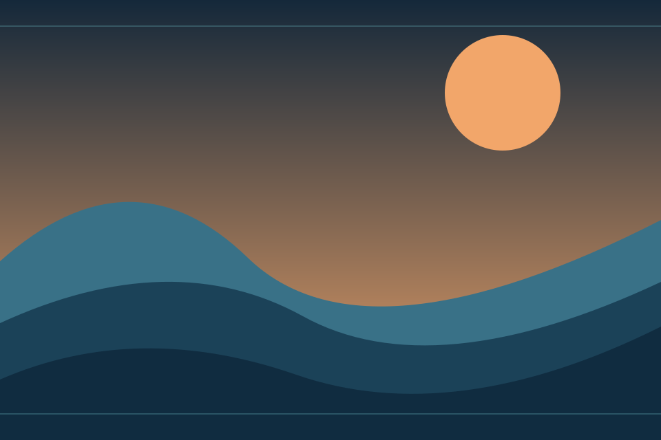
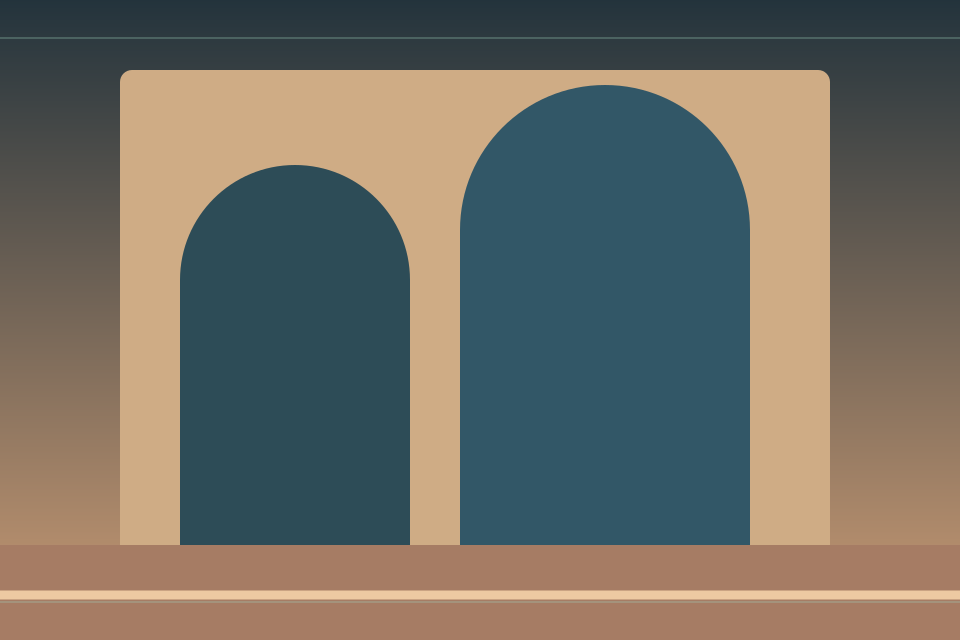
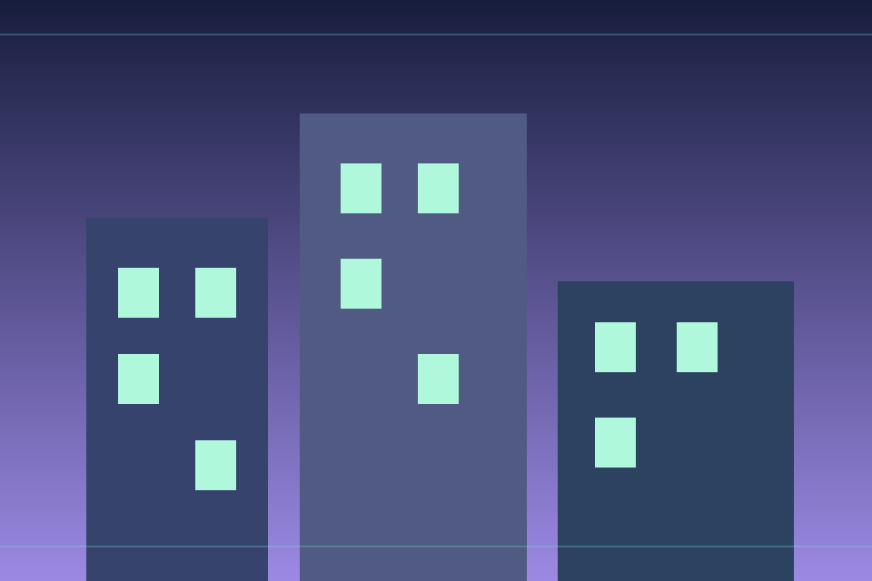
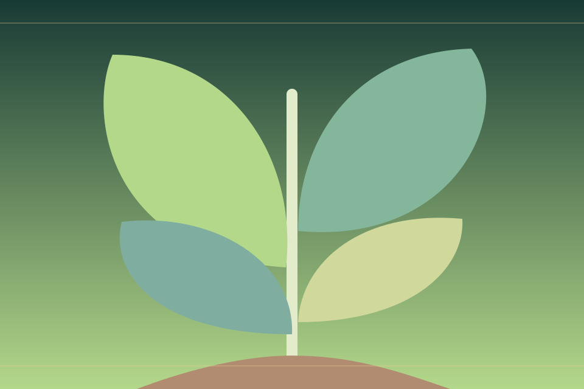

FREE / MIT
Free sections & layouts
Copy complete hero, support, feature, account, and documentation sections.
COPY-OWNED / FRAMEWORK-INDEPENDENT
Build faster with original HTML compositions styled by Syntyr. Every preview renders without JavaScript. Search, theme switching, and copying are documentation-only enhancements, not dependencies for your application.
These are static illustrative presentations: real authentication, billing, filtering, form validation, persistence and permissions belong to your application. Read integration and accessibility guidance.
DISCOVER / BUILD COMPLETE PAGES
Free examples are MIT-licensed. Commercial kits are concepts and not available for purchase.
FREE / MIT
Copy complete hero, support, feature, account, and documentation sections.
FREE / MIT
Polished page anatomy and storytelling recipes, still part of the free CSS library.
PRIVATE PREVIEW / NOT FOR SALE
Static screenshots of application layouts. The private kit is not available for purchase.
PRODUCT RESEARCH
Pro SaaS templates concept · Studio website templates concept.
See proposed paid section and application packs. No Premium products are available for purchase.
99 blocks available.
No blocks found. Try a different search or category.
No JavaScript needed: the first 12 blocks are visible immediately. Open a numbered batch below for more examples, or jump directly to any block with a link. All 99 examples are already included in this HTML document.
Marketing
A concise product introduction with real calls to action.
ANALYTICS / WITHOUT FRICTION
One clear workspace for teams tracking what matters.
<section class="syn-root syn-region" data-syn-theme="studio" aria-labelledby="syn-hero-product">
<div class="syn-site-hero">
<p class="syn-eyebrow">ANALYTICS / WITHOUT FRICTION</p>
<h2 id="syn-hero-product" class="syn-site-heading">Understand your product. <strong>Act with confidence.</strong></h2>
<p class="syn-lede">One clear workspace for teams tracking what matters.</p>
<div class="syn-actions">
<a class="syn-button syn-button--primary" href="/start">Start free</a>
<a class="syn-button syn-button--outline" href="/demo">Explore demo</a>
</div>
</div>
</section>Marketing
A restrained security product hero with an explicit trust message.
Deploy reliable software without trading away visibility or ownership.
Self-hosting and access controls are supplied by your application, not by CSS.
<section class="syn-root syn-region" data-syn-theme="studio" aria-labelledby="syn-hero-security">
<div class="syn-site-hero">
<span class="syn-badge">SECURITY BY DESIGN</span>
<h2 id="syn-hero-security" class="syn-site-heading">Ship fast. <strong>Stay in control.</strong></h2>
<p class="syn-lede">Deploy reliable software without trading away visibility or ownership.</p>
<div class="syn-actions"><a class="syn-button syn-button--primary" href="/docs">Read the docs</a></div>
<p class="syn-caption">Self-hosting and access controls are supplied by your application, not by CSS.</p>
</div>
</section>Marketing
Responsive feature cards based on a fluid CSS grid.
Connect the tools your team already uses.
Inspect the activity behind each decision.
Turn insights into actionable workflows.
<section class="syn-root syn-region" data-syn-theme="studio" aria-labelledby="syn-feature-heading">
<h2 id="syn-feature-heading" class="syn-heading">Everything in one place</h2>
<div class="syn-feature-grid">
<article class="syn-feature-card"><h3>Bring your data</h3><p>Connect the tools your team already uses.</p></article>
<article class="syn-feature-card"><h3>See what changed</h3><p>Inspect the activity behind each decision.</p></article>
<article class="syn-feature-card"><h3>Keep moving</h3><p>Turn insights into actionable workflows.</p></article>
</div>
</section>Marketing
A short benefits section with native list semantics.
WHY TEAMS SWITCH
<section class="syn-root syn-region" data-syn-theme="studio" aria-labelledby="syn-checklist-heading">
<div class="syn-panel">
<p class="syn-eyebrow">WHY TEAMS SWITCH</p>
<h2 id="syn-checklist-heading" class="syn-heading">A more deliberate workflow</h2>
<ul class="syn-feature-list">
<li>Centralize critical information.</li>
<li>Track work from request through delivery.</li>
<li>Export data whenever you need it.</li>
</ul>
</div>
</section>Marketing
Three responsive pricing cards with a featured plan.
$19 / mo
$49 / mo
Custom
Example prices only; replace plan data and checkout routes.
<section class="syn-root syn-region" data-syn-theme="studio" aria-labelledby="syn-pricing-heading">
<h2 id="syn-pricing-heading" class="syn-heading">Plans that scale</h2>
<div class="syn-pricing">
<article class="syn-price-card"><h3>Solo</h3><p class="syn-price-value">$19 <small>/ mo</small></p><ul class="syn-feature-list"><li>One workspace</li><li>Essential reports</li></ul><a class="syn-button" href="/checkout/solo">Choose Solo</a></article>
<article class="syn-price-card" data-syn-featured><h3>Team</h3><p class="syn-price-value">$49 <small>/ mo</small></p><ul class="syn-feature-list"><li>Unlimited workspaces</li><li>Team permissions</li></ul><a class="syn-button syn-button--primary" href="/checkout/team">Choose Team</a></article>
<article class="syn-price-card"><h3>Scale</h3><p class="syn-price-value">Custom</p><ul class="syn-feature-list"><li>Advanced controls</li><li>Assisted onboarding</li></ul><a class="syn-button" href="/contact">Contact sales</a></article>
</div>
<p class="syn-caption">Example prices only; replace plan data and checkout routes.</p>
</section>Marketing
Readable social proof with explicit quotation attribution.
“Our team finally has a shared view of the work that matters.”
<section class="syn-root syn-region" data-syn-theme="studio" aria-label="Customer testimonial">
<figure class="syn-panel">
<blockquote><p class="syn-lede">“Our team finally has a shared view of the work that matters.”</p></blockquote>
<figcaption class="syn-muted">Illustrative quote — replace with permission-based customer feedback.</figcaption>
</figure>
</section>Marketing
Keyboard-accessible native disclosures without a script.
Yes. This example is plain HTML and CSS.
Not for this native disclosure interface.
Override the documented CSS custom properties.
<section class="syn-root syn-region" data-syn-theme="studio" aria-labelledby="syn-faq-heading">
<h2 id="syn-faq-heading" class="syn-heading">Frequently asked questions</h2>
<details class="syn-details"><summary>Can I use my own hosting?</summary><p>Yes. This example is plain HTML and CSS.</p></details>
<details class="syn-details"><summary>Do I need JavaScript?</summary><p>Not for this native disclosure interface.</p></details>
<details class="syn-details"><summary>Can I customize the theme?</summary><p>Override the documented CSS custom properties.</p></details>
</section>Marketing
A compact conversion section with clear hierarchy.
Start with a workflow that works for your team.
<section class="syn-root syn-region" data-syn-theme="studio" aria-labelledby="syn-cta-heading">
<div class="syn-cta-band">
<div><h2 id="syn-cta-heading" class="syn-heading">Ready to explore?</h2><p>Start with a workflow that works for your team.</p></div>
<a class="syn-button syn-button--primary" href="/contact">Talk to us</a>
</div>
</section>Applications
Container-aware operational metrics with text labels.
Active accounts
1,284
Open requests
38
Completion
94%
<section class="syn-root syn-region" data-syn-theme="studio" aria-labelledby="syn-kpi-heading">
<h2 id="syn-kpi-heading" class="syn-heading">Operations snapshot</h2>
<div class="syn-stats">
<article class="syn-stat"><p class="syn-stat-label">Active accounts</p><p class="syn-stat-value">1,284</p></article>
<article class="syn-stat"><p class="syn-stat-label">Open requests</p><p class="syn-stat-value">38</p></article>
<article class="syn-stat"><p class="syn-stat-label">Completion</p><p class="syn-stat-value">94%</p></article>
</div>
</section>Applications
A compact activity feed in a reusable application card.
<section class="syn-root syn-region" data-syn-theme="studio" aria-labelledby="syn-activity-heading">
<div class="syn-app-card">
<header class="syn-app-card-header"><h2 id="syn-activity-heading" class="syn-heading">Recent activity</h2><span class="syn-badge">Today</span></header>
<ol class="syn-activity-list">
<li><span>Report prepared</span><time datetime="2026-11-15T10:30:00">10:30</time></li>
<li><span>New workspace added</span><time datetime="2026-11-15T09:15:00">09:15</time></li>
<li><span>Settings reviewed</span><time datetime="2026-11-15T08:00:00">08:00</time></li>
</ol>
</div>
</section>Applications
Semantic, scrollable table with caption and column scopes.
| Request | Owner | Status |
|---|---|---|
| REQ-103 | Alex | Ready |
| REQ-104 | Casey | Review |
<section class="syn-root syn-region" data-syn-theme="studio" aria-labelledby="syn-table-heading">
<h2 id="syn-table-heading" class="syn-heading">Active requests</h2>
<div class="syn-table-wrap">
<table class="syn-table">
<caption>Illustrative requests and their current state</caption>
<thead><tr><th scope="col">Request</th><th scope="col">Owner</th><th scope="col">Status</th></tr></thead>
<tbody>
<tr><th scope="row">REQ-103</th><td>Alex</td><td><span class="syn-status syn-status--success">Ready</span></td></tr>
<tr><th scope="row">REQ-104</th><td>Casey</td><td><span class="syn-status syn-status--warning">Review</span></td></tr>
</tbody>
</table>
</div>
</section>Applications
Server-ready GET filters that preserve native form semantics.
<section class="syn-root syn-region" data-syn-theme="studio" aria-labelledby="syn-filter-heading">
<h2 id="syn-filter-heading" class="syn-heading">Find a request</h2>
<form class="syn-panel syn-form" method="get" action="/requests">
<label class="syn-label" for="syn-block-query">Search by name</label>
<input class="syn-input" id="syn-block-query" name="query" type="search" placeholder="Search requests">
<label class="syn-label" for="syn-block-status">Status</label>
<select class="syn-select" id="syn-block-status" name="status">
<option value="">All statuses</option><option value="open">Open</option><option value="closed">Closed</option>
</select>
<button class="syn-button syn-button--primary" type="submit">Apply filters</button>
</form>
</section>Applications
Labeled settings form for server-backed applications.
<section class="syn-root syn-region" data-syn-theme="studio" aria-labelledby="syn-settings-heading">
<h2 id="syn-settings-heading" class="syn-heading">Workspace settings</h2>
<form class="syn-panel syn-form" method="post" action="/settings">
<label class="syn-label" for="syn-block-name">Workspace name</label>
<input class="syn-input" id="syn-block-name" name="name" autocomplete="organization" value="Northstar Operations" required>
<label class="syn-label" for="syn-block-timezone">Timezone</label>
<select class="syn-select" id="syn-block-timezone" name="timezone"><option value="UTC">UTC</option><option value="America/Sao_Paulo">Brasília</option></select>
<p class="syn-help">Connect your actual validation, CSRF protection and persistence.</p>
<button class="syn-button syn-button--primary" type="submit">Save settings</button>
</form>
</section>Applications
Simple list of people and roles with descriptive content.
<section class="syn-root syn-region" data-syn-theme="studio" aria-labelledby="syn-team-heading">
<div class="syn-app-card">
<header class="syn-app-card-header"><h2 id="syn-team-heading" class="syn-heading">Team members</h2><span class="syn-badge">3 members</span></header>
<ul class="syn-activity-list">
<li><strong>Alex Kim</strong><span class="syn-muted">Owner</span></li>
<li><strong>Sam Lee</strong><span class="syn-muted">Editor</span></li>
<li><strong>Casey Rivera</strong><span class="syn-muted">Viewer</span></li>
</ul>
</div>
</section>Applications
A compact, readable subscription overview.
TEAM PLAN
$49 / month
Next illustrative invoice: December 1, 2026.
Manage billing<section class="syn-root syn-region" data-syn-theme="studio" aria-labelledby="syn-billing-heading">
<article class="syn-app-card">
<header class="syn-app-card-header"><h2 id="syn-billing-heading" class="syn-heading">Subscription</h2><span class="syn-status syn-status--success">Active</span></header>
<p class="syn-eyebrow">TEAM PLAN</p>
<p class="syn-metric">$49 <span class="syn-caption">/ month</span></p>
<p class="syn-muted">Next illustrative invoice: December 1, 2026.</p>
<a href="/billing" class="syn-button">Manage billing</a>
</article>
</section>Applications
A short onboarding progression conveyed without color-only state.
<section class="syn-root syn-region" data-syn-theme="studio" aria-labelledby="syn-onboarding-heading">
<div class="syn-panel">
<h2 id="syn-onboarding-heading" class="syn-heading">Complete your setup</h2>
<ol class="syn-activity-list">
<li><span>1. Create your workspace</span><span class="syn-status syn-status--success">Done</span></li>
<li><span>2. Invite teammates</span><span class="syn-status syn-status--warning">Next</span></li>
<li><span>3. Connect a data source</span><span class="syn-muted">Not started</span></li>
</ol>
<a href="/onboarding" class="syn-button syn-button--primary">Continue setup</a>
</div>
</section>Technical
A static terminal presentation, not an interactive shell.
$ deploy --preview
✓ Build completed
✓ Static assets verified
Preview is ready<section class="syn-root syn-region" data-syn-theme="studio" aria-labelledby="syn-terminal-heading">
<h2 id="syn-terminal-heading" class="syn-heading">Deploy preview</h2>
<div class="syn-terminal" role="group" aria-label="Illustrative deployment output">
<div class="syn-terminal-bar"><span class="syn-terminal-title">deploy.log</span><span>EXIT 0</span></div>
<pre class="syn-terminal-body"><code><span class="syn-terminal-prompt">$</span> <span class="syn-terminal-command">deploy --preview</span>
<span class="syn-terminal-success">✓ Build completed</span>
<span class="syn-terminal-success">✓ Static assets verified</span>
<span class="syn-terminal-muted">Preview is ready</span></code></pre>
</div>
</section>Technical
Status notice with actionable text and honest semantics.
Some requests may be delayed. Engineers are investigating and will post updates.
View status history<section class="syn-root syn-region" data-syn-theme="studio" aria-labelledby="syn-incident-heading">
<div class="syn-alert syn-alert--danger">
<h2 id="syn-incident-heading" class="syn-heading">Degraded API performance</h2>
<p>Some requests may be delayed. Engineers are investigating and will post updates.</p>
<a href="/status">View status history</a>
</div>
</section>Technical
Readable service status with native progress indicators.
SYSTEM TELEMETRY
Illustrative values; connect to real monitoring data.
<section class="syn-root syn-region" data-syn-theme="studio" aria-labelledby="syn-telemetry-heading">
<div class="syn-panel">
<p class="syn-eyebrow">SYSTEM TELEMETRY</p>
<h2 id="syn-telemetry-heading" class="syn-heading">Cluster health</h2>
<label class="syn-label" for="syn-block-uptime">Requests completed — 96%</label>
<progress class="syn-meter" id="syn-block-uptime" value="96" max="100">96%</progress>
<p class="syn-caption">Illustrative values; connect to real monitoring data.</p>
</div>
</section>Technical
Compact changelog entry with a machine-readable date.
/ RELEASE
A more focused way to review and filter your activity.
<section class="syn-root syn-region" data-syn-theme="studio" aria-labelledby="syn-release-heading">
<article class="syn-panel">
<p class="syn-eyebrow"><time datetime="2026-11-15">NOV 15, 2026</time> / RELEASE</p>
<h2 id="syn-release-heading" class="syn-heading">Version 1.4</h2>
<p class="syn-muted">A more focused way to review and filter your activity.</p>
<ul class="syn-feature-list">
<li>Improved record filtering.</li><li>Clearer empty and loading states.</li><li>Keyboard navigation refinements.</li>
</ul>
<a href="/changelog">View all releases</a>
</article>
</section>Applications
Server-ready resource search, record table, pagination and empty state.
Illustrative records. Search, edits, and permissions require your application.
Try different filters or create a resource.
<section class="syn-root syn-region" data-syn-theme="studio" aria-labelledby="syn-resource-workspace-heading">
<header class="syn-collection-toolbar">
<div>
<h2 id="syn-resource-workspace-heading" class="syn-heading">Resources</h2>
<p class="syn-muted">Illustrative records. Search, edits, and permissions require your application.</p>
</div>
<div class="syn-collection-actions">
<a class="syn-button syn-button--primary" href="/resources/new">Create resource</a>
</div>
</header>
<form class="syn-filter-bar syn-panel" action="/resources" method="get" role="search" aria-label="Filter resources">
<div class="syn-filter-field syn-filter-field--query">
<label class="syn-label" for="syn-rw-search">Find resources</label>
<input class="syn-input" id="syn-rw-search" name="q" type="search" placeholder="Name or identifier">
</div>
<div class="syn-filter-field">
<label class="syn-label" for="syn-rw-status">Status</label>
<select class="syn-select" id="syn-rw-status" name="status">
<option value="">All statuses</option>
<option value="active">Active</option>
<option value="pending">Pending review</option>
</select>
</div>
<div class="syn-filter-actions"><button class="syn-button syn-button--primary" type="submit">Filter</button></div>
</form>
<div class="syn-panel">
<div class="syn-table-wrap" role="region" aria-label="Resources; scroll horizontally for more columns" tabindex="0">
<table class="syn-table">
<caption>Illustrative resources, sorted by name</caption>
<thead>
<tr><th scope="col">Name</th><th scope="col">Owner</th><th scope="col">Status</th><th scope="col">Details</th></tr>
</thead>
<tbody>
<tr>
<th scope="row">North warehouse</th><td>Morgan</td>
<td><span class="syn-status syn-status--success">Active</span></td>
<td><a href="/resources/north-warehouse">View</a></td>
</tr>
<tr>
<th scope="row">West terminal</th><td>Casey</td>
<td><span class="syn-status syn-status--warning">Pending</span></td>
<td><a href="/resources/west-terminal">View</a></td>
</tr>
</tbody>
</table>
</div>
<nav aria-label="Resource pages" class="syn-inline">
<span aria-current="page">Page 1 of 2</span>
<a href="/resources?page=2">Next page</a>
</nav>
</div>
<details>
<summary>Alternative empty-result state (illustration)</summary>
<div class="syn-result-state">
<h3 class="syn-heading">No matching resources</h3>
<p>Try different filters or <a href="/resources/new">create a resource</a>.</p>
</div>
</details>
</section>Applications
Accessible native deal stages, filters and links with no drag runtime.
Illustrative opportunities. The server supplies real stages, deal states, and permissions.
New site evaluation
Owner: Morgan · $8,000 estimatedAnnual placement
Owner: Casey · $12,000 estimatedNo deals in this stage.
Stages are presentation only. Changing a deal's stage needs an authorized server operation; there is no drag-and-drop JavaScript.
<section class="syn-root syn-region" data-syn-theme="studio" aria-labelledby="syn-crm-workspace-heading">
<header class="syn-collection-toolbar">
<div>
<h2 id="syn-crm-workspace-heading" class="syn-heading">Deal pipeline</h2>
<p class="syn-muted">Illustrative opportunities. The server supplies real stages, deal states, and permissions.</p>
</div>
<a class="syn-button syn-button--primary" href="/crm/deals/new">New deal</a>
</header>
<form method="get" action="/crm/deals" class="syn-filter-bar syn-panel" role="search" aria-label="Filter opportunities">
<div class="syn-filter-field syn-filter-field--query">
<label class="syn-label" for="syn-crm-query">Search deals</label>
<input class="syn-input" id="syn-crm-query" type="search" name="q" placeholder="Company or deal">
</div>
<div class="syn-filter-field">
<label class="syn-label" for="syn-crm-owner">Owner</label>
<select class="syn-select" id="syn-crm-owner" name="owner">
<option value="">All owners</option>
<option value="morgan">Morgan</option><option value="casey">Casey</option>
</select>
</div>
<div class="syn-filter-actions"><button class="syn-button syn-button--primary" type="submit">Apply</button></div>
</form>
<div class="syn-pipeline" tabindex="0" role="region" aria-label="Deal stages; scroll horizontally for more stages">
<section class="syn-pipeline-lane" aria-labelledby="syn-crm-prospect">
<h3 id="syn-crm-prospect">Prospecting <span class="syn-badge">1</span></h3>
<ol class="syn-pipeline-list">
<li class="syn-pipeline-card"><a href="/crm/deals/atlas">Atlas Systems</a>
<p>New site evaluation</p><small>Owner: Morgan · $8,000 estimated</small></li>
</ol>
</section>
<section class="syn-pipeline-lane" aria-labelledby="syn-crm-proposal">
<h3 id="syn-crm-proposal">Proposal <span class="syn-badge">1</span></h3>
<ol class="syn-pipeline-list">
<li class="syn-pipeline-card"><a href="/crm/deals/cedar">Cedar Labs</a>
<p>Annual placement</p><small>Owner: Casey · $12,000 estimated</small></li>
</ol>
</section>
<section class="syn-pipeline-lane" aria-labelledby="syn-crm-won">
<h3 id="syn-crm-won">Closed won <span class="syn-badge">0</span></h3>
<p class="syn-muted">No deals in this stage.</p>
</section>
</div>
<p class="syn-help">Stages are presentation only. Changing a deal's stage needs an authorized server operation; there is no drag-and-drop JavaScript.</p>
</section>Applications
Subscription details, invoice history and a server-owned billing contact form.
Illustrative subscription and invoice information, not a payment interface.
| Invoice | Date | Status | Amount |
|---|---|---|---|
| INV-102 | Paid | $149 |
<section class="syn-root syn-region" data-syn-theme="studio" aria-labelledby="syn-billing-workspace-heading">
<header class="syn-collection-toolbar">
<div>
<h2 id="syn-billing-workspace-heading" class="syn-heading">Workspace and billing</h2>
<p class="syn-muted">Illustrative subscription and invoice information, not a payment interface.</p>
</div>
<a class="syn-button syn-button--outline" href="/billing/payment-method">Manage payment method</a>
</header>
<div class="syn-layout">
<section class="syn-panel" aria-labelledby="syn-billing-plan-heading">
<h3 id="syn-billing-plan-heading">Current plan</h3>
<dl class="syn-record-fields">
<div><dt>Plan</dt><dd>Growth (example)</dd></div>
<div><dt>Billing cycle</dt><dd>Monthly</dd></div>
<div><dt>Next invoice</dt><dd><time datetime="2027-01-01">January 1, 2027</time></dd></div>
</dl>
<p><a href="/billing/plans">Compare plans</a></p>
</section>
<section class="syn-panel" aria-labelledby="syn-billing-settings-heading">
<h3 id="syn-billing-settings-heading">Billing contact</h3>
<form method="post" action="/billing/settings" class="syn-form">
<div class="syn-field">
<label class="syn-label" for="syn-billing-email">Billing email</label>
<input class="syn-input" type="email" id="syn-billing-email" name="billing_email"
autocomplete="email" value="billing@example.invalid" aria-describedby="syn-billing-help" required>
<p id="syn-billing-help" class="syn-help">Your server must validate this address and protect writes against CSRF.</p>
</div>
<button class="syn-button syn-button--primary" type="submit">Save contact</button>
</form>
</section>
</div>
<section class="syn-panel" aria-labelledby="syn-billing-invoices-heading">
<h3 id="syn-billing-invoices-heading">Recent invoices</h3>
<div class="syn-table-wrap" role="region" aria-label="Recent invoices; scroll horizontally for more columns" tabindex="0">
<table class="syn-table">
<caption>Illustrative invoice history</caption>
<thead><tr><th scope="col">Invoice</th><th scope="col">Date</th><th scope="col">Status</th><th scope="col">Amount</th></tr></thead>
<tbody>
<tr><th scope="row"><a href="/billing/invoices/inv-102">INV-102</a></th>
<td><time datetime="2026-11-01">Nov 1, 2026</time></td><td>Paid</td><td>$149</td></tr>
</tbody>
</table>
</div>
</section>
</section>Applications
Native authentication form with accessible labels and recovery link.
Use your account credentials. Authentication is implemented by your application.
<section class="syn-root syn-region" data-syn-theme="studio" aria-labelledby="syn-signin-heading">
<div class="syn-panel">
<h2 class="syn-heading" id="syn-signin-heading">Sign in to Northstar</h2>
<p class="syn-muted">Use your account credentials. Authentication is implemented by your application.</p>
<form class="syn-form" method="post" action="/sign-in">
<label class="syn-label" for="syn-signin-email">Email address</label>
<input class="syn-input" id="syn-signin-email" name="email" type="email" autocomplete="username" required>
<label class="syn-label" for="syn-signin-password">Password</label>
<input class="syn-input" id="syn-signin-password" name="password" type="password" autocomplete="current-password" required>
<button class="syn-button syn-button--primary" type="submit">Sign in</button>
</form>
<p class="syn-caption"><a href="/password/forgot">Forgot password?</a> · <a href="/sign-up">Create account</a></p>
</div>
</section>Applications
Email recovery request presentation with security integration notes.
Enter the email address associated with your account. If eligible, the service will send a recovery link.
The server should return a non-enumerating response and enforce token expiry, rate limits and CSRF protection.
Return to sign in<section class="syn-root syn-region" data-syn-theme="studio" aria-labelledby="syn-recovery-heading">
<div class="syn-panel">
<h2 class="syn-heading" id="syn-recovery-heading">Recover account access</h2>
<p>Enter the email address associated with your account. If eligible, the service will send a recovery link.</p>
<form class="syn-form" method="post" action="/password/forgot">
<label class="syn-label" for="syn-recovery-email">Email address</label>
<input class="syn-input" id="syn-recovery-email" name="email" type="email" autocomplete="email" required>
<button class="syn-button syn-button--primary" type="submit">Request recovery link</button>
</form>
<p class="syn-help">The server should return a non-enumerating response and enforce token expiry, rate limits and CSRF protection.</p>
<a href="/sign-in">Return to sign in</a>
</div>
</section>Applications
Actionable error state without fake success or client-side retry.
Unable to load / 503
No changes were submitted. Check service status or return to your dashboard.
The server must return the correct HTTP error status and provide a working retry route if available.
<section class="syn-root syn-region" data-syn-theme="studio" aria-labelledby="syn-error-heading">
<div class="syn-panel">
<p class="syn-eyebrow">Unable to load / 503</p>
<h2 id="syn-error-heading" class="syn-heading">This view is temporarily unavailable</h2>
<p>No changes were submitted. Check service status or return to your dashboard.</p>
<div class="syn-inline"><a class="syn-button syn-button--primary" href="/dashboard">Return to dashboard</a><a class="syn-button" href="/status">Service status</a></div>
<p class="syn-help">The server must return the correct HTTP error status and provide a working retry route if available.</p>
</div>
</section>Applications
Clear primary action and filter recovery guidance.
Create a project to organize tasks and invite teammates.
Create a projectTry clearing your filters if you expected existing projects.
<section class="syn-root syn-region" data-syn-theme="studio" aria-labelledby="syn-empty-heading">
<div class="syn-panel syn-empty">
<h2 id="syn-empty-heading" class="syn-heading">No projects yet</h2>
<p>Create a project to organize tasks and invite teammates.</p>
<a class="syn-button syn-button--primary" href="/projects/new">Create a project</a>
<p class="syn-caption">Try clearing your filters if you expected existing projects.</p>
</div>
</section>Marketing
A semantic comparison matrix that can scroll within narrow containers.
| Capability | Basic | Team |
|---|---|---|
| Shared projects | 3 | Unlimited |
| Email support | Included | Included |
| Team permissions | Not included | Included |
Replace sample capabilities with real product entitlements.
<section class="syn-root syn-region" data-syn-theme="studio" aria-labelledby="syn-compare">
<h2 id="syn-compare" class="syn-heading">Compare plan capabilities</h2>
<div class="syn-table-wrap" role="region" aria-label="Plan capabilities; scroll horizontally to view all columns" tabindex="0">
<table class="syn-table">
<caption>Illustrative package feature comparison</caption>
<thead><tr><th scope="col">Capability</th><th scope="col">Basic</th><th scope="col">Team</th></tr></thead>
<tbody>
<tr><th scope="row">Shared projects</th><td>3</td><td>Unlimited</td></tr>
<tr><th scope="row">Email support</th><td>Included</td><td>Included</td></tr>
<tr><th scope="row">Team permissions</th><td>Not included</td><td>Included</td></tr>
</tbody>
</table>
</div>
<p class="syn-caption">Replace sample capabilities with real product entitlements.</p>
</section>Marketing
A grid of documented integration entry points and benefits.
Plan dates alongside existing schedules.
Integration guideSend event data to systems you control.
Webhook guideMove your records from a simple file.
CSV import guideExample capabilities only. Connect these application-owned /integrations/ routes before publishing.
<section class="syn-root syn-region" data-syn-theme="studio" aria-labelledby="syn-integrations">
<h2 id="syn-integrations" class="syn-heading">Works with your workflow</h2>
<div class="syn-grid">
<article class="syn-panel"><h3>Calendar export</h3><p>Plan dates alongside existing schedules.</p><a href="/integrations/calendar">Integration guide</a></article>
<article class="syn-panel"><h3>Webhooks</h3><p>Send event data to systems you control.</p><a href="/integrations/webhooks">Webhook guide</a></article>
<article class="syn-panel"><h3>CSV import</h3><p>Move your records from a simple file.</p><a href="/integrations/csv">CSV import guide</a></article>
</div>
<p class="syn-caption">Example capabilities only. Connect these application-owned /integrations/ routes before publishing.</p>
</section>Marketing
An accessible subscription form with a native server-backed fallback.
STAY IN THE LOOP
Design patterns, maintenance tips and new articles. Unsubscribe at any time.
Connect a real consent-aware endpoint, CSRF protection and confirmation flow before publishing.
<section class="syn-root syn-region" data-syn-theme="studio" aria-labelledby="syn-newsletter">
<div class="syn-panel">
<p class="syn-eyebrow">STAY IN THE LOOP</p><h2 id="syn-newsletter" class="syn-heading">A useful note, once a month</h2>
<p>Design patterns, maintenance tips and new articles. Unsubscribe at any time.</p>
<form class="syn-form" action="/newsletter/subscribe" method="post">
<div class="syn-field"><label class="syn-label" for="syn-newsletter-email">Email address</label>
<input class="syn-input" type="email" id="syn-newsletter-email" name="email" autocomplete="email" required></div>
<button class="syn-button syn-button--primary" type="submit">Subscribe</button>
</form>
<p class="syn-caption">Connect a real consent-aware endpoint, CSRF protection and confirmation flow before publishing.</p>
</div>
</section>Marketing
A lightweight product or event announcement with a contextual destination.
PRODUCT UPDATE
Explore recently published resources and discover what has changed.
Read the update<section class="syn-root syn-region" data-syn-theme="studio" aria-labelledby="syn-announcement">
<div class="syn-panel">
<p class="syn-eyebrow">PRODUCT UPDATE</p>
<h2 id="syn-announcement" class="syn-heading">A new set of guides is available</h2>
<p>Explore recently published resources and discover what has changed.</p>
<a class="syn-button syn-button--outline" href="/updates">Read the update</a>
</div>
</section>Marketing
A compact text-only partner strip with no unlicensed logos.
Example technology categories, not customer endorsements.
<section class="syn-root syn-region" data-syn-theme="studio" aria-labelledby="syn-partners">
<h2 id="syn-partners" class="syn-heading">Compatible with your tools</h2>
<p class="syn-muted">Example technology categories, not customer endorsements.</p>
<ul class="syn-grid">
<li class="syn-panel"><strong>SQL databases</strong></li>
<li class="syn-panel"><strong>Static generators</strong></li>
<li class="syn-panel"><strong>Web components</strong></li>
</ul>
</section>Services
An ordered and accessible sequence for explaining a service.
Understand the people, context and constraints.
Validate the important flows with realistic content.
Ship, document and prepare for ongoing maintenance.
<section class="syn-root syn-region" data-syn-theme="studio" aria-labelledby="syn-process">
<h2 id="syn-process" class="syn-heading">A straightforward process</h2>
<ol class="syn-grid">
<li class="syn-panel"><h3>Discover</h3><p>Understand the people, context and constraints.</p></li>
<li class="syn-panel"><h3>Design</h3><p>Validate the important flows with realistic content.</p></li>
<li class="syn-panel"><h3>Deliver</h3><p>Ship, document and prepare for ongoing maintenance.</p></li>
</ol>
</section>Services
A services section with clear descriptions and destination links.
WHAT WE DO
Clear, responsive pages for growing teams.
Explore design servicesReliable tools designed for everyday workflows.
Explore developmentMaintenance, performance and accessibility reviews.
Explore ongoing care<section class="syn-root syn-region" data-syn-theme="studio" aria-labelledby="syn-services">
<p class="syn-eyebrow">WHAT WE DO</p><h2 id="syn-services" class="syn-heading">Services built around your goals</h2>
<div class="syn-grid">
<article class="syn-panel"><h3>Website design</h3><p>Clear, responsive pages for growing teams.</p><a href="/services/design">Explore design services</a></article>
<article class="syn-panel"><h3>Product development</h3><p>Reliable tools designed for everyday workflows.</p><a href="/services/development">Explore development</a></article>
<article class="syn-panel"><h3>Ongoing care</h3><p>Maintenance, performance and accessibility reviews.</p><a href="/services/maintenance">Explore ongoing care</a></article>
</div>
</section>Services
A service-area section suitable for local and regional businesses.
Remote collaboration with optional on-site project sessions.
On-site workshops and coordination by arrangement.
Request local availabilityStructured online reviews, delivery and documentation.
Plan a remote project<section class="syn-root syn-region" data-syn-theme="studio" aria-labelledby="syn-coverage">
<h2 id="syn-coverage" class="syn-heading">Where we work</h2>
<p class="syn-lede">Remote collaboration with optional on-site project sessions.</p>
<div class="syn-grid">
<article class="syn-panel"><h3>Local teams</h3><p>On-site workshops and coordination by arrangement.</p><a href="/contact/local">Request local availability</a></article>
<article class="syn-panel"><h3>Remote teams</h3><p>Structured online reviews, delivery and documentation.</p><a href="/contact/remote">Plan a remote project</a></article>
</div>
</section>Portfolio
An accessible project gallery without fragile image dependencies.
WEB APP
Planning and reporting in one practical workspace.
View project detailsWEBSITE
A durable editorial system built for reading.
View publishing projectCOMMERCE
Products presented with clarity and accessible browsing.
View storefront project<section class="syn-root syn-region" data-syn-theme="studio" aria-labelledby="syn-portfolio">
<h2 id="syn-portfolio" class="syn-heading">Selected projects</h2>
<div class="syn-grid">
<article class="syn-panel"><p class="syn-eyebrow">WEB APP</p><h3>Field operations portal</h3><p>Planning and reporting in one practical workspace.</p><a href="/work/field-portal">View project details</a></article>
<article class="syn-panel"><p class="syn-eyebrow">WEBSITE</p><h3>Independent publisher</h3><p>A durable editorial system built for reading.</p><a href="/work/publisher">View publishing project</a></article>
<article class="syn-panel"><p class="syn-eyebrow">COMMERCE</p><h3>Specialty storefront</h3><p>Products presented with clarity and accessible browsing.</p><a href="/work/storefront">View storefront project</a></article>
</div>
</section>Services
A team directory section without invented portraits or credentials.
Research, content design and accessible interaction patterns.
About the design teamDevelopment, integration and long-term site operations.
About the engineering teamRole-based sample content; add actual people only with permission.
<section class="syn-root syn-region" data-syn-theme="studio" aria-labelledby="syn-team">
<h2 id="syn-team" class="syn-heading">Meet the team</h2>
<div class="syn-grid">
<article class="syn-panel"><h3>Design</h3><p>Research, content design and accessible interaction patterns.</p><a href="/team/design">About the design team</a></article>
<article class="syn-panel"><h3>Engineering</h3><p>Development, integration and long-term site operations.</p><a href="/team/engineering">About the engineering team</a></article>
</div>
<p class="syn-caption">Role-based sample content; add actual people only with permission.</p>
</section>Services
A labeled contact form with appropriate native inputs and privacy guidance.
Sample form only. Add consent, anti-spam, CSRF and server validation in your application.
<section class="syn-root syn-region" data-syn-theme="studio" aria-labelledby="syn-inquiry">
<h2 id="syn-inquiry" class="syn-heading">Tell us about your project</h2>
<form class="syn-panel syn-form" action="/contact/request" method="post">
<div class="syn-field"><label class="syn-label" for="syn-inquiry-name">Your name</label>
<input class="syn-input" id="syn-inquiry-name" name="name" autocomplete="name" required></div>
<div class="syn-field"><label class="syn-label" for="syn-inquiry-email">Email address</label>
<input class="syn-input" id="syn-inquiry-email" name="email" type="email" autocomplete="email" required></div>
<div class="syn-field"><label class="syn-label" for="syn-inquiry-details">Project details</label>
<textarea class="syn-input" id="syn-inquiry-details" name="details" rows="3" required></textarea></div>
<button class="syn-button syn-button--primary" type="submit">Request a conversation</button>
</form>
<p class="syn-caption">Sample form only. Add consent, anti-spam, CSRF and server validation in your application.</p>
</section>Editorial
A prominent lead article with an accessible summary and a real reading link.
FROM THE JOURNAL
Practical ways to make useful software easier to understand.
· 6 min read
Read the article<section class="syn-root syn-region" data-syn-theme="studio" aria-labelledby="syn-featured-story">
<p class="syn-eyebrow">FROM THE JOURNAL</p>
<div class="syn-split">
<div>
<h2 id="syn-featured-story" class="syn-heading">Designing calmer customer experiences</h2>
<p class="syn-lede">Practical ways to make useful software easier to understand.</p>
<p class="syn-caption"><time datetime="2026-10-14">October 14, 2026</time> · 6 min read</p>
<a class="syn-button syn-button--primary" href="/journal/calm-interfaces">Read the article</a>
</div>
<aside class="syn-panel" aria-label="Article highlights">
<p class="syn-eyebrow">IN THIS ARTICLE</p>
<ul class="syn-feature-list"><li>Clear information hierarchy</li><li>Helpful empty states</li><li>Accessible interaction patterns</li></ul>
</aside>
</div>
</section>Editorial
A responsive collection of dated articles with titles and excerpts.
DESIGN
Make long-form pages inviting across screen sizes.
DEVELOPMENT
Accessible controls before complex abstractions.
PRACTICE
Build reusable interfaces without growing complexity.
<section class="syn-root syn-region" data-syn-theme="studio" aria-labelledby="syn-journal-grid">
<h2 id="syn-journal-grid" class="syn-heading">Latest from the journal</h2>
<div class="syn-grid">
<article class="syn-panel"><p class="syn-eyebrow">DESIGN</p><h3><a href="/journal/reading-layouts">Better reading layouts</a></h3><p>Make long-form pages inviting across screen sizes.</p><p class="syn-caption"><time datetime="2026-11-03">November 3, 2026</time></p></article>
<article class="syn-panel"><p class="syn-eyebrow">DEVELOPMENT</p><h3><a href="/journal/native-elements">Start with native elements</a></h3><p>Accessible controls before complex abstractions.</p><p class="syn-caption"><time datetime="2026-10-18">October 18, 2026</time></p></article>
<article class="syn-panel"><p class="syn-eyebrow">PRACTICE</p><h3><a href="/journal/design-systems">A small design system</a></h3><p>Build reusable interfaces without growing complexity.</p><p class="syn-caption"><time datetime="2026-10-02">October 2, 2026</time></p></article>
</div>
<p><a href="/journal">All articles</a></p>
</section>Editorial
A semantic article header, readable paragraphs and related links.
FIELD NOTES
Make room for clarity, portability and simple maintenance.
By the editorial team ·
Use real headings, links and lists to give every reader a clear path through the page. Structure should remain understandable without a stylesheet.
Use fluid sizing and relative units so content can respond to different screens and text settings.
Good defaults make the common case easier.
<article class="syn-root syn-region" data-syn-theme="studio" aria-labelledby="syn-article-title">
<header>
<p class="syn-eyebrow">FIELD NOTES</p>
<h2 id="syn-article-title" class="syn-heading">Build a website that lasts</h2>
<p class="syn-lede">Make room for clarity, portability and simple maintenance.</p>
<p class="syn-caption">By the editorial team · <time datetime="2026-10-20">October 20, 2026</time></p>
</header>
<section aria-labelledby="syn-article-body">
<h3 id="syn-article-body">Start with meaningful content</h3>
<p>Use real headings, links and lists to give every reader a clear path through the page. Structure should remain understandable without a stylesheet.</p>
<h3>Keep layouts flexible</h3><p>Use fluid sizing and relative units so content can respond to different screens and text settings.</p>
<blockquote><p>Good defaults make the common case easier.</p></blockquote>
</section>
<footer><p><a href="/journal">Back to all articles</a></p></footer>
</article>Editorial
A concise author introduction with a clearly labeled profile link.
ABOUT THE AUTHOR
Writing about resilient websites, accessible interfaces and practical design decisions.
View all articles by the editorial team<section class="syn-root syn-region" data-syn-theme="studio" aria-labelledby="syn-author-name">
<div class="syn-panel">
<p class="syn-eyebrow">ABOUT THE AUTHOR</p>
<h2 id="syn-author-name" class="syn-heading">Editorial Team</h2>
<p>Writing about resilient websites, accessible interfaces and practical design decisions.</p>
<a href="/authors/editorial">View all articles by the editorial team</a>
</div>
</section>Editorial
An editorial introduction with primary actions and a contextual checklist beside it.
A CLEARER APPROACH
Design work becomes easier when the people, constraints and desired outcomes are visible from the beginning.
<section class="syn-root syn-region" data-syn-theme="studio" aria-labelledby="syn-layout-intro-heading">
<div class="syn-sidecar">
<div class="syn-stack">
<p class="syn-eyebrow">A CLEARER APPROACH</p>
<h2 class="syn-heading" id="syn-layout-intro-heading">Start with the problem, not the platform.</h2>
<p class="syn-lede">Design work becomes easier when the people, constraints and desired outcomes are visible from the beginning.</p>
<div class="syn-inline">
<a class="syn-button syn-button--primary" href="/approach">Explore our approach</a>
<a class="syn-button syn-button--outline" href="/work">See example projects</a>
</div>
</div>
<aside class="syn-panel syn-stack" aria-label="What to expect">
<p class="syn-eyebrow">AT A GLANCE</p>
<h3 class="syn-heading">Focus on what matters</h3>
<ul class="syn-feature-list">
<li>Understand the audience</li>
<li>Choose measurable goals</li>
<li>Keep decisions documented</li>
</ul>
</aside>
</div>
</section>Editorial
A long-form article and real anchor-linked table of contents in a wrapping sidecar.
PRACTICAL GUIDE
An article and an in-page contents list that reflow without a JavaScript scroll handler.
What does a reader need to understand or accomplish here? Put the answer near the beginning, using familiar language and a meaningful heading.
Provide context without burying the action beneath decorative content.
Group related material, keep link names descriptive, and prefer short paragraphs when scanning is likely.
<section class="syn-root syn-region" data-syn-theme="studio" aria-labelledby="syn-layout-article-heading">
<p class="syn-eyebrow">PRACTICAL GUIDE</p>
<h2 class="syn-heading" id="syn-layout-article-heading">A practical way to write clearer product pages</h2>
<p class="syn-lede">An article and an in-page contents list that reflow without a JavaScript scroll handler.</p>
<div class="syn-sidecar">
<article class="syn-stack" aria-label="Guide content">
<section class="syn-stack" aria-labelledby="syn-layout-article-summary">
<h3 id="syn-layout-article-summary">Begin with one question</h3>
<p>What does a reader need to understand or accomplish here? Put the answer near the beginning, using familiar language and a meaningful heading.</p>
<p>Provide context without burying the action beneath decorative content.</p>
</section>
<section class="syn-stack" aria-labelledby="syn-layout-article-practices">
<h3 id="syn-layout-article-practices">Make the next step obvious</h3>
<p>Group related material, keep link names descriptive, and prefer short paragraphs when scanning is likely.</p>
<ul class="syn-feature-list"><li>Use one heading per idea.</li><li>Explain unfamiliar terminology.</li><li>Offer a clear path forward.</li></ul>
<p><a href="/guides/content">Read the full content guide</a></p>
</section>
</article>
<aside class="syn-panel syn-stack">
<nav aria-label="On this page">
<strong>On this page</strong>
<ol class="syn-stack">
<li><a href="#syn-layout-article-summary">Begin with one question</a></li>
<li><a href="#syn-layout-article-practices">Make the next step obvious</a></li>
</ol>
</nav>
<p class="syn-caption">The in-page links target real headings; adjust IDs when copying more than once.</p>
</aside>
</div>
</section>Portfolio
A project outcome summary with challenges, solution and next action.
EXAMPLE CASE STUDY
An illustrative project brief for a field-services company.
Read case study<section class="syn-root syn-region" data-syn-theme="studio" aria-labelledby="syn-case-study">
<div class="syn-split">
<div>
<p class="syn-eyebrow">EXAMPLE CASE STUDY</p><h2 id="syn-case-study" class="syn-heading">A simpler client portal</h2>
<p class="syn-lede">An illustrative project brief for a field-services company.</p>
<a class="syn-button syn-button--outline" href="/work/client-portal">Read case study</a>
</div>
<dl class="syn-panel">
<dt><strong>Challenge</strong></dt><dd>Updates were scattered across email and documents.</dd>
<dt><strong>Approach</strong></dt><dd>A focused portal with consistent status and file access.</dd>
<dt><strong>Outcome</strong></dt><dd>Prototype ready for stakeholder review; no performance claims.</dd>
</dl>
</div>
</section>Navigation
A compact brand, navigation and call-to-action header with native links.
<header class="syn-root syn-header syn-region" data-syn-theme="studio" aria-label="Example site header">
<a class="syn-logo syn-list-row" href="/home">Northstar Studio</a>
<nav class="syn-nav" aria-label="Primary navigation">
<a class="syn-list-row" href="/services">Services</a><a class="syn-list-row" href="/work">Work</a><a class="syn-list-row" href="/journal">Journal</a>
</nav>
<a class="syn-button syn-button--primary" href="/contact">Start a project</a>
</header>Navigation
A reusable footer with separate navigation groups and business information.
<footer class="syn-root syn-region" data-syn-theme="studio" aria-label="Example site footer">
<div class="syn-grid">
<section class="syn-panel" aria-labelledby="syn-footer-brand">
<h2 class="syn-heading" id="syn-footer-brand">Northstar Studio</h2>
<p class="syn-muted">Independent design and engineering for useful websites.</p>
</section>
<nav class="syn-panel" aria-label="Explore">
<strong>Explore</strong>
<ul><li><a class="syn-list-row" href="/services">Services</a></li><li><a class="syn-list-row" href="/work">Selected work</a></li><li><a class="syn-list-row" href="/journal">Journal</a></li></ul>
</nav>
<nav class="syn-panel" aria-label="Information">
<strong>Information</strong>
<ul><li><a class="syn-list-row" href="/contact">Contact</a></li><li><a class="syn-list-row" href="/privacy">Privacy</a></li><li><a class="syn-list-row" href="/accessibility">Accessibility</a></li></ul>
</nav>
</div>
<p class="syn-caption">Example footer. Replace brand details and links before publishing.</p>
</footer>Navigation
Centered brand, horizontal links, and a secondary call to action.
<header class="syn-root syn-region syn-stack" data-syn-theme="studio" aria-label="Example centered site header">
<div class="syn-inline" style="--syn-inline-justify:center">
<a class="syn-logo" href="/home">Mosaic Collective</a>
</div>
<nav class="syn-nav syn-inline" style="--syn-inline-justify:center" aria-label="Primary navigation">
<a href="/work">Our work</a>
<a href="/approach">Approach</a>
<a href="/team">Team</a>
<a href="/journal">Journal</a>
</nav>
<div class="syn-inline" style="--syn-inline-justify:center">
<a class="syn-button syn-button--outline" href="/contact">Let's talk</a>
</div>
</header>Navigation
Separate utility and product navigation with a prominent action.
<header class="syn-root syn-region syn-stack" data-syn-theme="studio" aria-label="Example two-row site header">
<div class="syn-inline" style="--syn-inline-justify:space-between">
<a class="syn-logo" href="/home">Atlas Platform</a>
<nav class="syn-inline" aria-label="Utility navigation">
<a class="syn-list-row" href="/help">Help</a>
<a class="syn-list-row" href="/login">Sign in</a>
</nav>
</div>
<div class="syn-header" style="--syn-header-padding-block:0.5rem">
<nav class="syn-nav" aria-label="Primary navigation">
<a href="/product">Product</a>
<a href="/solutions">Solutions</a>
<a href="/pricing">Pricing</a>
<a href="/docs">Docs</a>
</nav>
<a class="syn-button syn-button--primary" href="/start">Start free</a>
</div>
</header>Navigation
Compact brand and expandable keyboard-accessible menu without JavaScript.
<header class="syn-root syn-region syn-stack" data-syn-theme="studio" aria-label="Example disclosure site header">
<div class="syn-inline" style="--syn-inline-justify:space-between">
<a class="syn-logo" href="/home">Northstar Journal</a>
<a class="syn-button syn-button--outline" href="/subscribe">Subscribe</a>
</div>
<details class="syn-details">
<summary>Explore the site</summary>
<nav class="syn-nav" aria-label="Primary navigation">
<a href="/stories">Stories</a>
<a href="/topics">Topics</a>
<a href="/about">About</a>
<a href="/contact">Contact</a>
</nav>
</details>
</header>Navigation
Space-saving brand, legal links and disclosure in a wrapping row.
<footer class="syn-root syn-region syn-stack" data-syn-theme="studio" aria-label="Example compact site footer">
<div class="syn-inline" style="--syn-inline-justify:space-between">
<a class="syn-logo" href="/home">Northstar Studio</a>
<nav class="syn-inline" aria-label="Footer navigation">
<a class="syn-list-row" href="/work">Work</a>
<a class="syn-list-row" href="/contact">Contact</a>
<a class="syn-list-row" href="/privacy">Privacy</a>
</nav>
</div>
<p class="syn-caption">Example company information. Replace links and legal details before publishing.</p>
</footer>Navigation
Responsive product, resource, company and legal navigation groups.
<footer class="syn-root syn-region syn-stack" data-syn-theme="studio" aria-label="Example sitemap site footer">
<div class="syn-grid" style="--syn-grid-min:12rem">
<section aria-labelledby="syn-sitemap-about">
<h2 class="syn-heading" id="syn-sitemap-about">Atlas Platform</h2>
<p class="syn-muted">A clearer way to manage your work.</p>
</section>
<nav class="syn-stack" aria-label="Product links">
<strong>Product</strong>
<a class="syn-list-row" href="/features">Features</a>
<a class="syn-list-row" href="/pricing">Pricing</a>
<a class="syn-list-row" href="/integrations">Integrations</a>
</nav>
<nav class="syn-stack" aria-label="Resources links">
<strong>Resources</strong>
<a class="syn-list-row" href="/docs">Documentation</a>
<a class="syn-list-row" href="/guides">Guides</a>
<a class="syn-list-row" href="/support">Support</a>
</nav>
<nav class="syn-stack" aria-label="Company and legal links">
<strong>Company</strong>
<a class="syn-list-row" href="/about">About</a>
<a class="syn-list-row" href="/privacy">Privacy</a>
<a class="syn-list-row" href="/terms">Terms</a>
</nav>
</div>
<p class="syn-caption">Example links and company details; replace before publishing.</p>
</footer>Navigation
Email subscription example beside site links; requires a host-owned backend.
<footer class="syn-root syn-region syn-stack" data-syn-theme="studio" aria-label="Example newsletter site footer">
<div class="syn-grid">
<section class="syn-stack" aria-labelledby="syn-newsletter-footer-title">
<h2 class="syn-heading" id="syn-newsletter-footer-title">The Field Notes</h2>
<p class="syn-muted">Occasional ideas for more thoughtful digital products.</p>
<form class="syn-stack" action="/newsletter/subscribe" method="post">
<label class="syn-label" for="syn-footer-newsletter-email">Email address</label>
<div class="syn-inline">
<input class="syn-input" id="syn-footer-newsletter-email" name="email" type="email" autocomplete="email" required>
<button class="syn-button syn-button--primary" type="submit">Subscribe</button>
</div>
<p class="syn-caption">Example form only. Connect server validation, consent, CSRF protection and unsubscribe handling.</p>
</form>
</section>
<nav class="syn-stack" aria-label="Footer navigation">
<strong>Explore</strong>
<a class="syn-list-row" href="/articles">Articles</a>
<a class="syn-list-row" href="/about">About</a>
<a class="syn-list-row" href="/contact">Contact</a>
<a class="syn-list-row" href="/privacy">Privacy</a>
</nav>
</div>
<p class="syn-caption">Illustrative business and subscription details; replace before publishing.</p>
</footer>Navigation
Keyboard-friendly disclosure with grouped destination links and no menu runtime.
<section class="syn-root syn-region" data-syn-theme="studio" aria-label="Expandable website navigation example">
<nav aria-label="Products and resources" class="syn-stack">
<div class="syn-inline" style="--syn-inline-justify:space-between">
<a class="syn-logo" href="/">NORTH / STUDIO</a>
<a class="syn-button syn-button--outline" href="/contact">Get in touch</a>
</div>
<details class="syn-details" open>
<summary>Explore our solutions</summary>
<div class="syn-stack">
<p class="syn-muted">Browse product areas or jump straight to a guide.</p>
<div class="syn-feature-grid">
<section class="syn-feature-card">
<h2 class="syn-heading">Products</h2>
<ul class="syn-stack">
<li><a href="/products/analytics">Analytics platform</a></li>
<li><a href="/products/automation">Workflow automation</a></li>
</ul>
</section>
<section class="syn-feature-card">
<h2 class="syn-heading">Resources</h2>
<ul class="syn-stack">
<li><a href="/docs">Documentation</a></li>
<li><a href="/journal">Journal</a></li>
</ul>
</section>
</div>
</div>
</details>
</nav>
</section>Technical
Documentation navigation, breadcrumb and article content.
Import the version-pinned stylesheet and wrap your application in a Syntyr root.
<main class="syn-root">Hello world</main>Explore composable components and semantic forms.
Browse components<section class="syn-root syn-shell" data-syn-theme="studio" aria-labelledby="syn-docs-heading">
<nav class="syn-breadcrumbs" aria-label="Breadcrumb"><ol><li><a href="/docs">Docs</a></li><li aria-current="page">Getting started</li></ol></nav>
<div class="syn-sidecar">
<article><h2 class="syn-title" id="syn-docs-heading">Getting started</h2>
<p>Import the version-pinned stylesheet and wrap your application in a Syntyr root.</p>
<pre class="syn-code"><code><main class="syn-root">Hello world</main></code></pre>
<h3 id="syn-docs-next">Next steps</h3><p>Explore composable components and semantic forms.</p>
<a href="/docs/components">Browse components</a>
</article>
<nav class="syn-panel" aria-label="Documentation sections"><h2 class="syn-heading">Guides</h2>
<ul class="syn-list-group" role="list">
<li><a class="syn-list-row" href="/docs/start" aria-current="page">Getting started</a></li>
<li><a class="syn-list-row" href="/docs/components">Components</a></li>
<li><a class="syn-list-row" href="/docs/themes">Themes</a></li>
</ul>
</nav>
</div>
</section>Publishing
Loop-style article cards with real GET search, taxonomy selection and pagination.
THE JOURNAL
A reusable archive: the host server supplies matching items and pagination.
Why native controls are a strong foundation for production forms.
· 5 min read
Build responsive hierarchy using existing layout primitives.
· 4 min read
A practical approach to stable tokens and low-maintenance HTML.
· 7 min read
<section class="syn-root syn-region syn-stack" data-syn-theme="studio" aria-labelledby="syn-collection-heading">
<header class="syn-stack">
<p class="syn-eyebrow">THE JOURNAL</p>
<h2 class="syn-section-heading" id="syn-collection-heading">Ideas for practical teams</h2>
<p class="syn-muted">A reusable archive: the host server supplies matching items and pagination.</p>
</header>
<form class="syn-filter-bar" method="get" action="/journal" role="search" aria-label="Filter articles">
<div class="syn-filter-field syn-filter-field--query">
<label class="syn-label" for="syn-collection-search">Search articles</label>
<input class="syn-input" id="syn-collection-search" type="search" name="q" placeholder="Search the journal">
</div>
<div class="syn-filter-field">
<label class="syn-label" for="syn-collection-category">Topic</label>
<select class="syn-select" id="syn-collection-category" name="category">
<option value="">All topics</option>
<option value="engineering">Engineering</option>
<option value="design">Design</option>
</select>
</div>
<div class="syn-filter-actions"><button class="syn-button syn-button--primary" type="submit">Find articles</button></div>
</form>
<div class="syn-feature-grid">
<article class="syn-feature-card syn-stack">
<span class="syn-badge">Engineering</span>
<h3 class="syn-heading"><a href="/journal/accessible-forms">Forms that work for everyone</a></h3>
<p class="syn-muted">Why native controls are a strong foundation for production forms.</p>
<p class="syn-caption"><time datetime="2026-10-19">October 19, 2026</time> · 5 min read</p>
</article>
<article class="syn-feature-card syn-stack">
<span class="syn-badge">Design</span>
<h3 class="syn-heading"><a href="/journal/clear-layouts">Make dense pages easier to scan</a></h3>
<p class="syn-muted">Build responsive hierarchy using existing layout primitives.</p>
<p class="syn-caption"><time datetime="2026-10-26">October 26, 2026</time> · 4 min read</p>
</article>
<article class="syn-feature-card syn-stack">
<span class="syn-badge">Engineering</span>
<h3 class="syn-heading"><a href="/journal/steady-components">Components built to last</a></h3>
<p class="syn-muted">A practical approach to stable tokens and low-maintenance HTML.</p>
<p class="syn-caption"><time datetime="2026-11-02">November 2, 2026</time> · 7 min read</p>
</article>
</div>
<nav class="syn-pagination" aria-label="Pagination">
<a class="syn-page-link" href="/journal?page=1" aria-current="page">1</a>
<a class="syn-page-link" href="/journal?page=2">2</a>
<a class="syn-page-link" href="/journal?page=2" aria-label="Next page">Next</a>
</nav>
</section>Commerce
Product catalog cards with explicit price and detail links.
EVERYDAY
Plain-paper notebook for planning.
$18.00
View notebookESSENTIAL
A compact case for small essentials.
$24.00
View canvas caseWORKSPACE
A simple structure for each day.
$21.00
View plannerFictional products and prices; no checkout behavior is provided.
<section class="syn-root syn-region" data-syn-theme="studio" aria-labelledby="syn-collection">
<h2 id="syn-collection" class="syn-heading">Featured collection</h2>
<div class="syn-grid">
<article class="syn-panel"><p class="syn-eyebrow">EVERYDAY</p><h3>Desk notebook</h3><p>Plain-paper notebook for planning.</p><p><strong>$18.00</strong></p><a href="/products/notebook">View notebook</a></article>
<article class="syn-panel"><p class="syn-eyebrow">ESSENTIAL</p><h3>Canvas case</h3><p>A compact case for small essentials.</p><p><strong>$24.00</strong></p><a href="/products/canvas-case">View canvas case</a></article>
<article class="syn-panel"><p class="syn-eyebrow">WORKSPACE</p><h3>Daily planner</h3><p>A simple structure for each day.</p><p><strong>$21.00</strong></p><a href="/products/planner">View planner</a></article>
</div>
<p class="syn-caption">Fictional products and prices; no checkout behavior is provided.</p>
</section>Commerce
A merchandise category section with links instead of fabricated checkout controls.
01
Useful objects for capturing ideas.
Browse writing tools02
Simple products for daily work.
Browse desk essentials<section class="syn-root syn-region" data-syn-theme="studio" aria-labelledby="syn-shop-categories">
<h2 id="syn-shop-categories" class="syn-heading">Explore the collection</h2>
<div class="syn-grid">
<article class="syn-panel"><p class="syn-eyebrow">01</p><h3>Writing tools</h3><p>Useful objects for capturing ideas.</p><a href="/shop/writing">Browse writing tools</a></article>
<article class="syn-panel"><p class="syn-eyebrow">02</p><h3>Desk essentials</h3><p>Simple products for daily work.</p><a href="/shop/desk">Browse desk essentials</a></article>
</div>
</section>Marketing
An editorial split section with a concrete feature benefit and a complementary product detail.
PRODUCT / FEATURE
One clear place to review owners, deadlines, and next steps.
Explore features<section class="syn-root syn-region" data-syn-theme="studio" aria-labelledby="feature-spotlight-heading">
<div class="syn-sidecar">
<div>
<p class="syn-eyebrow">PRODUCT / FEATURE</p>
<h2 class="syn-heading" id="feature-spotlight-heading">Stay on top of every handoff.</h2>
<p class="syn-lede">One clear place to review owners, deadlines, and next steps.</p>
<a class="syn-button syn-button--primary" href="/features">Explore features</a>
</div>
<aside class="syn-panel" aria-label="Illustrative task status">
<p class="syn-caption">EXAMPLE TASK</p>
<h3 class="syn-heading">Review proposal</h3>
<p><span class="syn-badge">Ready for review</span></p>
<p class="syn-muted">Owner: Sample team · Due: Next week</p>
</aside>
</div>
</section>Marketing
Transparent questions to ask about security, reliability, and data handling; not certification claims.
Replace these sample prompts with verified policies and public documentation.
Describe how permissions are enforced and audited.
Publish retention, export and deletion policies.
Explain reporting channels and response expectations.
<section class="syn-root syn-region" data-syn-theme="studio" aria-labelledby="trust-assurance-heading">
<h2 class="syn-heading" id="trust-assurance-heading">Trust needs evidence.</h2>
<p>Replace these sample prompts with verified policies and public documentation.</p>
<ul class="syn-grid">
<li class="syn-panel"><h3 class="syn-heading">Access controls</h3><p>Describe how permissions are enforced and audited.</p></li>
<li class="syn-panel"><h3 class="syn-heading">Data handling</h3><p>Publish retention, export and deletion policies.</p></li>
<li class="syn-panel"><h3 class="syn-heading">Incident response</h3><p>Explain reporting channels and response expectations.</p></li>
</ul>
<a href="/security">Read our documented practices</a>
</section>Marketing
An agenda and accessible native signup form; your server must implement registration.
· Online
Illustrative event. Replace the date and submission route.
<section class="syn-root syn-region" data-syn-theme="studio" aria-labelledby="event-registration-heading">
<h2 class="syn-heading" id="event-registration-heading">Join a product workshop</h2>
<p><time datetime="2026-12-03T14:00:00Z">December 3, 2026 at 14:00 UTC</time> · Online</p>
<p class="syn-muted">Illustrative event. Replace the date and submission route.</p>
<form class="syn-form" action="/events/register" method="post">
<label class="syn-label" for="event-register-email">Email address</label>
<input class="syn-input" id="event-register-email" name="email" type="email"
autocomplete="email" required>
<button class="syn-button syn-button--primary" type="submit">Request a seat</button>
</form>
</section>Applications
A searchable-looking help index built from real navigation links, not a fake search control.
Start with the topic that matches your question.
<section class="syn-root syn-region" data-syn-theme="studio" aria-labelledby="help-center-heading">
<h2 class="syn-heading" id="help-center-heading">How can we help?</h2>
<p class="syn-muted">Start with the topic that matches your question.</p>
<nav aria-label="Help categories">
<ul class="syn-grid">
<li class="syn-panel"><h3 class="syn-heading"><a href="/help/getting-started">Getting started</a></h3><p>Accounts, setup, and your first project.</p></li>
<li class="syn-panel"><h3 class="syn-heading"><a href="/help/billing">Billing and plans</a></h3><p>Invoices, subscriptions, and receipts.</p></li>
<li class="syn-panel"><h3 class="syn-heading"><a href="/help/security">Account security</a></h3><p>Access and sign-in guidance.</p></li>
</ul>
</nav>
</section>Applications
Time-ordered notifications with visible status labels and real detail destinations.
A teammate requested your review of a draft.
A sample export is ready to inspect.
<section class="syn-root syn-region" data-syn-theme="studio" aria-labelledby="notification-center-heading">
<h2 class="syn-heading" id="notification-center-heading">Recent notifications</h2>
<ol class="syn-stack">
<li class="syn-panel">
<h3 class="syn-heading">New review requested <span class="syn-badge">Unread</span></h3>
<p>A teammate requested your review of a draft.</p>
<p><time datetime="2026-11-22T10:00:00Z">November 22, 10:00 UTC</time> · <a href="/notifications/review">View request</a></p>
</li>
<li class="syn-panel">
<h3 class="syn-heading">Export finished</h3>
<p>A sample export is ready to inspect.</p>
<p><time datetime="2026-11-21T16:30:00Z">November 21, 16:30 UTC</time> · <a href="/notifications/export">View export</a></p>
</li>
</ol>
</section>Technical
Readable example request and response, with method, route, and JSON; your API owns behavior.
REFERENCE / ILLUSTRATIVE
GET /v1/records · Sample contract, not a live endpoint.
GET /v1/records?limit=10{
"items": [{"id": "example-1", "status": "ready"}],
"next": null
}<section class="syn-root syn-region" data-syn-theme="studio" aria-labelledby="api-endpoint-heading">
<p class="syn-eyebrow">REFERENCE / ILLUSTRATIVE</p>
<h2 class="syn-heading" id="api-endpoint-heading">List example records</h2>
<p><code>GET /v1/records</code> · Sample contract, not a live endpoint.</p>
<h3 class="syn-heading">Request</h3>
<pre class="syn-code-scroll" tabindex="0" role="region" aria-label="Example API request"><code>GET /v1/records?limit=10</code></pre>
<h3 class="syn-heading">Example response</h3>
<pre class="syn-code-scroll" tabindex="0" role="region" aria-label="Example JSON response"><code>{
"items": [{"id": "example-1", "status": "ready"}],
"next": null
}</code></pre>
<a href="/docs/api">Full API reference</a>
</section>Marketing
An accessible, CSS-only horizontal collection for feature, portfolio or editorial cards.
EXPLORE THE PLATFORM
An overflow-friendly collection of independent cards. Scroll sideways for more.
<section class="syn-root syn-region" data-syn-theme="studio" aria-labelledby="syn-scroll-collection-title">
<header class="syn-page-header">
<div><p class="syn-eyebrow">EXPLORE THE PLATFORM</p><h2 id="syn-scroll-collection-title" class="syn-heading">Built for the whole team</h2>
<p class="syn-muted">An overflow-friendly collection of independent cards. Scroll sideways for more.</p></div>
<a class="syn-button syn-button--outline" href="/features">All features</a>
</header>
<div class="syn-scroll-rail" role="region" tabindex="0" aria-label="Product highlights, scroll horizontally for additional cards">
<article class="syn-evidence-card">
<div class="syn-evidence-media syn-evidence-media--placeholder" aria-hidden="true">01 / REPORTS</div>
<div class="syn-evidence-body"><h3>Reports without friction</h3><p>Give your team a shared view of the latest numbers.</p>
<a href="/features/reports">Explore reporting</a></div>
</article>
<article class="syn-evidence-card">
<div class="syn-evidence-media syn-evidence-media--placeholder" aria-hidden="true">02 / WORKFLOWS</div>
<div class="syn-evidence-body"><h3>Work moves forward</h3><p>Track owners, due dates, approvals and handoffs.</p>
<a href="/features/workflows">Explore workflows</a></div>
</article>
<article class="syn-evidence-card">
<div class="syn-evidence-media syn-evidence-media--placeholder" aria-hidden="true">03 / CONNECT</div>
<div class="syn-evidence-body"><h3>Connect your tools</h3><p>Bring key records together without switching tabs.</p>
<a href="/features/integrations">Explore integrations</a></div>
</article>
<article class="syn-evidence-card">
<div class="syn-evidence-media syn-evidence-media--placeholder" aria-hidden="true">04 / CONTROL</div>
<div class="syn-evidence-body"><h3>Stay in control</h3><p>See permission scopes and operational history.</p>
<a href="/features/security">Explore security</a></div>
</article>
</div>
</section>Marketing
A container-aware asymmetric feature section using composable cards.
WHY TEAMS CHOOSE US
A container-aware bento layout built from ordinary semantic cards.
VISIBILITY
Combine your pipeline, project milestones and operational signals without hopping between tools.
SECURITY
Organize members and workspaces with clear permissions.
Learn about accessAUTOMATION
Present each workflow step and its owner in context.
Explore workflowsREPORTING
Prepare actionable summaries that make sense to every stakeholder.
Explore analytics<section class="syn-root syn-region" data-syn-theme="studio" aria-labelledby="syn-bento-title">
<header><p class="syn-eyebrow">WHY TEAMS CHOOSE US</p><h2 id="syn-bento-title" class="syn-heading">One clear place to get work done</h2>
<p class="syn-muted">A container-aware bento layout built from ordinary semantic cards.</p></header>
<div class="syn-bento-grid">
<article class="syn-feature-card syn-surface--accent syn-bento-card--wide">
<p class="syn-eyebrow">VISIBILITY</p><h3>See the complete picture</h3>
<p>Combine your pipeline, project milestones and operational signals without hopping between tools.</p>
<dl class="syn-record-fields"><div><dt>Open projects</dt><dd>24 (sample)</dd></div>
<div><dt>Items needing review</dt><dd>3 (sample)</dd></div></dl>
<a href="/features/overview">Explore the overview</a>
</article>
<article class="syn-feature-card"><p class="syn-eyebrow">SECURITY</p><h3>Know who can do what</h3>
<p>Organize members and workspaces with clear permissions.</p><a href="/features/permissions">Learn about access</a></article>
<article class="syn-feature-card"><p class="syn-eyebrow">AUTOMATION</p><h3>Make repeat work simpler</h3>
<p>Present each workflow step and its owner in context.</p><a href="/features/automation">Explore workflows</a></article>
<article class="syn-feature-card"><p class="syn-eyebrow">REPORTING</p><h3>Share results with clarity</h3>
<p>Prepare actionable summaries that make sense to every stakeholder.</p><a href="/features/analytics">Explore analytics</a></article>
</div>
</section>Marketing
Split-screen product hero with semantic CSS-only mock dashboard content.
A SIMPLER WAY TO OPERATE
Plan work, keep stakeholders aligned and understand what happens next from one calm workspace.
Illustrative product presentation, not a live dashboard.
Active projects
24Pending review
3| Workstream | Owner | State |
|---|---|---|
| Website release | Design | In review |
| Customer onboarding | Operations | Active |
<section class="syn-root syn-region" data-syn-theme="studio" aria-labelledby="syn-hero-preview-title">
<div class="syn-showcase">
<div class="syn-showcase-copy">
<p class="syn-eyebrow">A SIMPLER WAY TO OPERATE</p>
<h2 id="syn-hero-preview-title" class="syn-fluid-display">Your work, finally in focus.</h2>
<p class="syn-lede">Plan work, keep stakeholders aligned and understand what happens next from one calm workspace.</p>
<div class="syn-actions"><a class="syn-button syn-button--primary" href="/start">Start free</a>
<a class="syn-button syn-button--outline" href="/demo">See the demo</a></div>
<p class="syn-caption">Illustrative product presentation, not a live dashboard.</p>
</div>
<div class="syn-showcase-visual" role="region" aria-label="Illustrative product dashboard">
<div class="syn-app-card">
<header class="syn-app-card-header"><h3>Operations overview</h3><span class="syn-badge">Example</span></header>
<div class="syn-kpi-grid">
<div class="syn-panel"><p class="syn-caption">Active projects</p><strong>24</strong></div>
<div class="syn-panel"><p class="syn-caption">Pending review</p><strong>3</strong></div>
</div>
<div class="syn-table-wrap" role="region" tabindex="0" aria-label="Illustrative dashboard records, scroll for more columns">
<table class="syn-table syn-table--readable"><caption>Recent work (sample data)</caption>
<thead><tr><th scope="col">Workstream</th><th scope="col">Owner</th><th scope="col">State</th></tr></thead>
<tbody><tr><th scope="row">Website release</th><td>Design</td><td>In review</td></tr>
<tr><th scope="row">Customer onboarding</th><td>Operations</td><td>Active</td></tr></tbody>
</table>
</div>
</div>
</div>
</div>
</section>Marketing
Full split section with illustration, record details and activity timeline.
KEEP EVERYONE ALIGNED
Each update can have an owner, a timestamp and a next action. Bring the details together in a single readable record.
<section class="syn-root syn-region" data-syn-theme="studio" aria-labelledby="syn-feature-spotlight-title">
<div class="syn-showcase">
<div class="syn-showcase-copy">
<p class="syn-eyebrow">KEEP EVERYONE ALIGNED</p>
<h2 id="syn-feature-spotlight-title" class="syn-heading">Decisions have context.</h2>
<p>Each update can have an owner, a timestamp and a next action. Bring the details together in a single readable record.</p>
<ul><li>Understand the latest changes.</li><li>Locate the next step.</li><li>Keep relevant history in view.</li></ul>
<a class="syn-button syn-button--outline" href="/features/activity">Learn about activity</a>
</div>
<div class="syn-showcase-visual">
<div class="syn-app-card">
<header class="syn-app-card-header"><h3>Project detail</h3><span class="syn-badge">In progress</span></header>
<dl class="syn-record-fields">
<div><dt>Owner</dt><dd>Operations team</dd></div>
<div><dt>Milestone</dt><dd>Content review</dd></div>
<div><dt>Next step</dt><dd>Confirm delivery</dd></div>
</dl>
<ol class="syn-activity-timeline">
<li><strong>Plan approved</strong><time datetime="2026-10-03">Oct 3</time></li>
<li><strong>Review requested</strong><time datetime="2026-10-04">Oct 4</time></li>
</ol>
</div>
</div>
</div>
</section>Marketing
A complete editorial case-study layout with honest illustrative metrics.
CUSTOMER STORY / ILLUSTRATIVE EXAMPLE
How a fictional services team could organize its work in one place.
This is sample editorial content. Replace it with a verified customer story before publishing.
Teams in one workspace
4Core handoff stages
6Shared project view
1Requests arrived through separate channels, leaving project owners without a consistent record of decisions.
A single intake, a defined set of milestones and shared status reporting created a repeatable workflow.
<article class="syn-root syn-region" data-syn-theme="studio" aria-labelledby="syn-case-study-title">
<header class="syn-site-hero">
<p class="syn-eyebrow">CUSTOMER STORY / ILLUSTRATIVE EXAMPLE</p>
<h2 id="syn-case-study-title" class="syn-site-heading">More clarity in every handoff.</h2>
<p class="syn-lede">How a fictional services team could organize its work in one place.</p>
<p class="syn-caption">This is sample editorial content. Replace it with a verified customer story before publishing.</p>
</header>
<section class="syn-region" aria-labelledby="syn-case-results-title">
<h3 id="syn-case-results-title">Illustrative outcomes</h3>
<div class="syn-kpi-grid">
<div class="syn-panel"><p class="syn-caption">Teams in one workspace</p><strong>4</strong></div>
<div class="syn-panel"><p class="syn-caption">Core handoff stages</p><strong>6</strong></div>
<div class="syn-panel"><p class="syn-caption">Shared project view</p><strong>1</strong></div>
</div>
</section>
<div class="syn-detail-layout">
<div class="syn-detail-main">
<section class="syn-panel" aria-labelledby="syn-case-challenge-title"><h3 id="syn-case-challenge-title">The challenge</h3>
<p>Requests arrived through separate channels, leaving project owners without a consistent record of decisions.</p></section>
<section class="syn-panel" aria-labelledby="syn-case-approach-title"><h3 id="syn-case-approach-title">The approach</h3>
<p>A single intake, a defined set of milestones and shared status reporting created a repeatable workflow.</p></section>
</div>
<aside class="syn-detail-aside syn-panel" aria-labelledby="syn-case-summary-title">
<h3 id="syn-case-summary-title">Story outline</h3>
<dl class="syn-record-fields"><div><dt>Industry</dt><dd>Professional services</dd></div>
<div><dt>Use case</dt><dd>Cross-team coordination</dd></div></dl>
<a href="/stories">More customer stories</a>
</aside>
</div>
</article>Marketing
Plan cards and a keyboard-scrollable semantic comparison table.
PLANS AND FEATURES
Illustrative monthly prices. Confirm final billing terms with your application.
$29 / month
For individuals getting organized.
Choose Starter$79 / month
For growing teams collaborating daily.
Choose TeamCustom
For organizations with broader needs.
Talk to sales| Capability | Starter | Team | Scale |
|---|---|---|---|
| Projects | 5 | Unlimited | Unlimited |
| Team members | 1 | 10 | Custom |
| Audit history | Basic | Extended | Extended |
| Support | Help center | Dedicated |
<section class="syn-root syn-region" data-syn-theme="studio" aria-labelledby="syn-pricing-comparison-title">
<header><p class="syn-eyebrow">PLANS AND FEATURES</p><h2 id="syn-pricing-comparison-title" class="syn-heading">Choose what fits your team</h2>
<p class="syn-muted">Illustrative monthly prices. Confirm final billing terms with your application.</p></header>
<div class="syn-grid">
<article class="syn-panel"><h3>Starter</h3><p class="syn-lede">$29 <small>/ month</small></p>
<p>For individuals getting organized.</p><a class="syn-button syn-button--outline" href="/checkout/starter">Choose Starter</a></article>
<article class="syn-panel syn-surface--accent"><h3>Team</h3><p class="syn-lede">$79 <small>/ month</small></p>
<p>For growing teams collaborating daily.</p><a class="syn-button syn-button--primary" href="/checkout/team">Choose Team</a></article>
<article class="syn-panel"><h3>Scale</h3><p class="syn-lede">Custom</p>
<p>For organizations with broader needs.</p><a class="syn-button syn-button--outline" href="/contact/sales">Talk to sales</a></article>
</div>
<div class="syn-table-wrap" role="region" tabindex="0" aria-label="Plan feature comparison, scroll horizontally for additional columns">
<table class="syn-table syn-table--readable">
<caption>Illustrative feature availability by plan</caption>
<thead><tr><th scope="col">Capability</th><th scope="col">Starter</th><th scope="col">Team</th><th scope="col">Scale</th></tr></thead>
<tbody>
<tr><th scope="row">Projects</th><td>5</td><td>Unlimited</td><td>Unlimited</td></tr>
<tr><th scope="row">Team members</th><td>1</td><td>10</td><td>Custom</td></tr>
<tr><th scope="row">Audit history</th><td>Basic</td><td>Extended</td><td>Extended</td></tr>
<tr><th scope="row">Support</th><td>Help center</td><td>Email</td><td>Dedicated</td></tr>
</tbody>
</table>
</div>
</section>Applications
Native sign-up form and next-step guidance with real host routes.
CREATE YOUR ACCOUNT
Use your work email to create an account. The server must validate identity and credentials.
Already have an account? Sign in
<section class="syn-root syn-region" data-syn-theme="studio" aria-labelledby="syn-signup-title">
<div class="syn-detail-layout">
<div class="syn-detail-main syn-panel">
<p class="syn-eyebrow">CREATE YOUR ACCOUNT</p>
<h2 id="syn-signup-title" class="syn-heading">Start your workspace</h2>
<p class="syn-muted">Use your work email to create an account. The server must validate identity and credentials.</p>
<form class="syn-form" method="post" action="/auth/register">
<div class="syn-field"><label class="syn-label" for="syn-signup-name">Full name</label>
<input class="syn-input" id="syn-signup-name" name="name" autocomplete="name" required></div>
<div class="syn-field"><label class="syn-label" for="syn-signup-email">Work email</label>
<input class="syn-input" id="syn-signup-email" name="email" type="email" autocomplete="email" required></div>
<div class="syn-field"><label class="syn-label" for="syn-signup-password">Password</label>
<input class="syn-input" id="syn-signup-password" name="password" type="password" autocomplete="new-password" minlength="12" aria-describedby="syn-signup-password-help" required>
<p id="syn-signup-password-help" class="syn-help">Use at least 12 characters. Configure rate limiting, secure sessions and CSRF protection server-side.</p></div>
<div class="syn-field"><label><input type="checkbox" name="accept_terms" required> I agree to the <a href="/terms">Terms</a> and <a href="/privacy">Privacy Policy</a>.</label></div>
<button class="syn-button syn-button--primary" type="submit">Create account</button>
</form>
<p>Already have an account? <a href="/auth/sign-in">Sign in</a></p>
</div>
<section class="syn-detail-aside syn-panel" aria-labelledby="syn-signup-next-title">
<h3 id="syn-signup-next-title">What comes next</h3>
<ol><li>Verify your email.</li><li>Name your workspace.</li><li>Invite teammates when ready.</li></ol>
<p><a href="/auth/verify">Email verification help</a></p>
</section>
</div>
</section>Applications
Filterable records, detail navigation and native create form.
Search, inspect and create records with native links and forms.
<section class="syn-root syn-region" data-syn-theme="studio" aria-labelledby="syn-resource-crud-title">
<header class="syn-page-header">
<div><h2 id="syn-resource-crud-title" class="syn-heading">Manage resources</h2><p class="syn-muted">Search, inspect and create records with native links and forms.</p></div>
<a class="syn-button syn-button--outline" href="/resources/export">Export records</a>
</header>
<div class="syn-detail-layout">
<div class="syn-detail-main">
<form class="syn-filter-bar" method="get" action="/resources">
<div class="syn-filter-field syn-filter-field--query"><label class="syn-label" for="syn-resources-query">Search resources</label>
<input id="syn-resources-query" class="syn-input" name="q" type="search" placeholder="Name or owner"></div>
<div class="syn-filter-actions"><button class="syn-button syn-button--outline" type="submit">Filter</button></div>
</form>
<div class="syn-table-wrap" role="region" tabindex="0" aria-label="Resource records, scroll horizontally for more columns">
<table class="syn-table syn-table--readable"><caption>Illustrative resource inventory</caption>
<thead><tr><th scope="col">Name</th><th scope="col">Owner</th><th scope="col">State</th><th scope="col">Action</th></tr></thead>
<tbody><tr><th scope="row">Campaign brief</th><td>Creative</td><td>Active</td><td><a href="/resources/brief">Details</a></td></tr>
<tr><th scope="row">Release plan</th><td>Engineering</td><td>Draft</td><td><a href="/resources/release-plan">Details</a></td></tr></tbody>
</table>
</div>
<p class="syn-caption">Editing and deletion are intentionally delegated to host-owned record routes.</p>
</div>
<section class="syn-detail-aside syn-panel" aria-labelledby="syn-resource-add-title">
<h3 id="syn-resource-add-title">Create a resource</h3>
<form class="syn-form" method="post" action="/resources">
<div class="syn-field"><label class="syn-label" for="syn-resource-name">Name</label>
<input class="syn-input" id="syn-resource-name" name="name" required maxlength="120"></div>
<div class="syn-field"><label class="syn-label" for="syn-resource-type">Type</label>
<select class="syn-input" id="syn-resource-type" name="type" required>
<option value="document">Document</option><option value="task">Task</option><option value="asset">Asset</option></select></div>
<button class="syn-button syn-button--primary" type="submit">Create resource</button>
</form>
<p class="syn-caption">The backend owns validation, persistence, CSRF protection and permissions.</p>
</section>
</div>
</section>Applications
Workspace roster, role information and a native invite form.
WORKSPACE SETTINGS
Make membership and role assignments easy to inspect.
| Member | Role | Status | |
|---|---|---|---|
| Alex Morgan | alex@example.invalid | Owner | Active |
| Jordan Lee | jordan@example.invalid | Editor | Invited |
Your backend must authorize invitations, enforce role limits and protect mutations against CSRF.
<section class="syn-root syn-region" data-syn-theme="studio" aria-labelledby="syn-org-members-title">
<header class="syn-page-header">
<div><p class="syn-eyebrow">WORKSPACE SETTINGS</p><h2 id="syn-org-members-title" class="syn-heading">People and permissions</h2>
<p class="syn-muted">Make membership and role assignments easy to inspect.</p></div>
<a class="syn-button syn-button--outline" href="/settings/roles">Role definitions</a>
</header>
<div class="syn-detail-layout">
<div class="syn-detail-main">
<div class="syn-table-wrap" role="region" tabindex="0" aria-label="Workspace members, scroll for additional columns">
<table class="syn-table syn-table--readable"><caption>Example workspace membership</caption>
<thead><tr><th scope="col">Member</th><th scope="col">Email</th><th scope="col">Role</th><th scope="col">Status</th></tr></thead>
<tbody><tr><th scope="row">Alex Morgan</th><td>alex@example.invalid</td><td>Owner</td><td>Active</td></tr>
<tr><th scope="row">Jordan Lee</th><td>jordan@example.invalid</td><td>Editor</td><td>Invited</td></tr></tbody>
</table>
</div>
<p><a href="/settings/invitations">Review pending invitations</a></p>
</div>
<section class="syn-detail-aside syn-panel" aria-labelledby="syn-org-invite-title">
<h3 id="syn-org-invite-title">Invite someone</h3>
<form class="syn-form" method="post" action="/settings/invitations">
<div class="syn-field"><label class="syn-label" for="syn-invite-email">Email address</label>
<input id="syn-invite-email" class="syn-input" name="email" type="email" autocomplete="email" required></div>
<div class="syn-field"><label class="syn-label" for="syn-invite-role">Role</label>
<select class="syn-input" id="syn-invite-role" name="role" required>
<option value="viewer">Viewer</option><option value="editor">Editor</option></select></div>
<button class="syn-button syn-button--primary" type="submit">Send invitation</button>
</form>
<p class="syn-caption">Your backend must authorize invitations, enforce role limits and protect mutations against CSRF.</p>
</section>
</div>
</section>Applications
Plan details, native metering and invoice history.
WORKSPACE BILLING
Illustrative billing data; payment operations belong to your billing provider and backend.
$79 / month
Next scheduled renewal: (sample)
Review plansResets January 1 (example). The server calculates the authoritative usage.
View usage details<section class="syn-root syn-region" data-syn-theme="studio" aria-labelledby="syn-billing-usage-title">
<header class="syn-page-header">
<div><p class="syn-eyebrow">WORKSPACE BILLING</p><h2 id="syn-billing-usage-title" class="syn-heading">Subscription and usage</h2>
<p class="syn-muted">Illustrative billing data; payment operations belong to your billing provider and backend.</p></div>
<a class="syn-button syn-button--outline" href="/billing/payment-method">Payment methods</a>
</header>
<div class="syn-grid">
<article class="syn-panel" aria-labelledby="syn-usage-plan-title">
<h3 id="syn-usage-plan-title">Team plan</h3><p class="syn-lede">$79 / month</p>
<p>Next scheduled renewal: <time datetime="2027-01-01">January 1, 2027</time> (sample)</p>
<a href="/billing/plans">Review plans</a>
</article>
<article class="syn-panel" aria-labelledby="syn-usage-meter-title">
<h3 id="syn-usage-meter-title">Monthly quota</h3>
<p><label for="syn-usage-meter">68 of 100 credits used</label></p>
<meter id="syn-usage-meter" min="0" max="100" value="68">68%</meter>
<p class="syn-caption">Resets January 1 (example). The server calculates the authoritative usage.</p>
<a href="/billing/usage">View usage details</a>
</article>
</div>
<div class="syn-table-wrap" role="region" tabindex="0" aria-label="Billing invoices, scroll horizontally for more columns">
<table class="syn-table syn-table--readable"><caption>Example invoice history</caption>
<thead><tr><th scope="col">Invoice</th><th scope="col">Date</th><th scope="col">Amount</th><th scope="col">Status</th></tr></thead>
<tbody><tr><th scope="row"><a href="/billing/invoices/inv-104">INV-104</a></th><td><time datetime="2026-11-01">Nov 1, 2026</time></td><td>$79</td><td>Paid</td></tr>
<tr><th scope="row"><a href="/billing/invoices/inv-103">INV-103</a></th><td><time datetime="2026-10-01">Oct 1, 2026</time></td><td>$79</td><td>Paid</td></tr></tbody>
</table>
</div>
</section>Applications
Connection directory with connected, disconnected and error examples.
Connections, permissions and synchronization must be implemented by the host application.
Synchronize project milestones with a calendar provider.
Organize project files beside relevant records.
Manage connectionReview the connection scope and any last synchronization failure.
Review statusConsent screens, redirects, tokens and real statuses are not implemented by this HTML snippet.
<section class="syn-root syn-region" data-syn-theme="studio" aria-labelledby="syn-integrations-connect-title">
<header class="syn-page-header">
<div><h2 id="syn-integrations-connect-title" class="syn-heading">Connect your tools</h2>
<p class="syn-muted">Connections, permissions and synchronization must be implemented by the host application.</p></div>
<a class="syn-button syn-button--outline" href="/integrations/logs">Connection events</a>
</header>
<div class="syn-grid">
<article class="syn-panel" aria-labelledby="syn-integration-calendar-title">
<header class="syn-app-card-header"><h3 id="syn-integration-calendar-title">Calendar</h3><span class="syn-badge">Not connected (sample)</span></header>
<p>Synchronize project milestones with a calendar provider.</p>
<form method="post" action="/integrations/calendar/connect">
<button type="submit" class="syn-button syn-button--primary">Connect calendar</button>
</form>
</article>
<article class="syn-panel" aria-labelledby="syn-integration-storage-title">
<header class="syn-app-card-header"><h3 id="syn-integration-storage-title">File storage</h3><span class="syn-badge">Connected (sample)</span></header>
<p>Organize project files beside relevant records.</p>
<a class="syn-button syn-button--outline" href="/integrations/storage">Manage connection</a>
</article>
<article class="syn-panel" aria-labelledby="syn-integration-crm-title">
<header class="syn-app-card-header"><h3 id="syn-integration-crm-title">CRM</h3><span class="syn-badge">Action required (sample)</span></header>
<p>Review the connection scope and any last synchronization failure.</p>
<a class="syn-button syn-button--outline" href="/integrations/crm">Review status</a>
</article>
</div>
<p class="syn-caption">Consent screens, redirects, tokens and real statuses are not implemented by this HTML snippet.</p>
</section>Applications
Masked API-key metadata, secure-endpoint form and documentation routes.
DEVELOPER WORKSPACE
Manage integration credentials and event delivery from your application.
Masked example identifiers only. Never render live secret values in this table.
| Name | Identifier | Scope | Created |
|---|---|---|---|
| Production sync | key_…7c2a | Read only |
Implement SSRF protections, signing secrets, retries, CSRF defenses and delivery logs server-side.
Review delivery events<section class="syn-root syn-region" data-syn-theme="studio" aria-labelledby="syn-developer-settings-title">
<header class="syn-page-header">
<div><p class="syn-eyebrow">DEVELOPER WORKSPACE</p><h2 id="syn-developer-settings-title" class="syn-heading">API keys and webhooks</h2>
<p class="syn-muted">Manage integration credentials and event delivery from your application.</p></div>
<a class="syn-button syn-button--outline" href="/docs/api">API documentation</a>
</header>
<div class="syn-detail-layout">
<div class="syn-detail-main syn-panel">
<h3>API keys</h3><p class="syn-caption">Masked example identifiers only. Never render live secret values in this table.</p>
<div class="syn-table-wrap" role="region" tabindex="0" aria-label="API key metadata, scroll for additional columns">
<table class="syn-table syn-table--readable"><caption>Example API key metadata</caption>
<thead><tr><th scope="col">Name</th><th scope="col">Identifier</th><th scope="col">Scope</th><th scope="col">Created</th></tr></thead>
<tbody><tr><th scope="row">Production sync</th><td><code>key_…7c2a</code></td><td>Read only</td>
<td><time datetime="2026-10-15">Oct 15, 2026</time></td></tr></tbody>
</table>
</div>
<p><a class="syn-button syn-button--primary" href="/settings/api-keys/new">Create API key</a></p>
</div>
<section class="syn-detail-aside syn-panel" aria-labelledby="syn-webhook-new-title">
<h3 id="syn-webhook-new-title">New webhook endpoint</h3>
<form class="syn-form" method="post" action="/settings/webhooks">
<div class="syn-field"><label class="syn-label" for="syn-webhook-url">HTTPS endpoint URL</label>
<input class="syn-input" id="syn-webhook-url" name="url" type="url" placeholder="Enter an HTTPS endpoint" pattern="https://.*" required></div>
<div class="syn-field"><label class="syn-label" for="syn-webhook-event">Event</label>
<select class="syn-input" id="syn-webhook-event" name="event" required>
<option value="project.created">project.created</option><option value="project.updated">project.updated</option></select></div>
<button class="syn-button syn-button--primary" type="submit">Add endpoint</button>
</form>
<p class="syn-caption">Implement SSRF protections, signing secrets, retries, CSRF defenses and delivery logs server-side.</p>
<a href="/settings/webhooks/deliveries">Review delivery events</a>
</section>
</div>
</section>Portfolio
Four original local illustrations in a CSS-only responsive gallery with native full-image links.
SELECTED IMAGES
Choose an image to view the full illustration. Replace these original samples with your own optimized photography.




<section class="syn-root syn-region" data-syn-theme="studio" aria-labelledby="syn-gallery-heading">
<p class="syn-eyebrow">SELECTED IMAGES</p>
<h2 class="syn-heading" id="syn-gallery-heading">A closer look at the work</h2>
<p class="syn-muted">Choose an image to view the full illustration. Replace these original samples with your own optimized photography.</p>
<div class="syn-image-gallery">
<figure><a href="../assets/gallery-horizon.svg" aria-label="View coastal horizon at full size"><img src="../assets/gallery-horizon.svg" alt="Layered coastal hills beneath a warm sunset" width="960" height="640" loading="lazy" decoding="async"></a><figcaption>01 / Coastal horizon</figcaption></figure>
<figure><a href="../assets/gallery-architecture.svg" aria-label="View architectural study at full size"><img src="../assets/gallery-architecture.svg" alt="Geometric arches on a sunlit modern building" width="960" height="640" loading="lazy" decoding="async"></a><figcaption>02 / Architecture study</figcaption></figure>
<figure><a href="../assets/gallery-signal.svg" aria-label="View night skyline at full size"><img src="../assets/gallery-signal.svg" alt="Illuminated windows in an abstract nighttime city skyline" width="960" height="640" loading="lazy" decoding="async"></a><figcaption>03 / Night signals</figcaption></figure>
<figure><a href="../assets/gallery-botanical.svg" aria-label="View botanical artwork at full size"><img src="../assets/gallery-botanical.svg" alt="Overlapping sage green leaves on a dark background" width="960" height="640" loading="lazy" decoding="async"></a><figcaption>04 / Botanical study</figcaption></figure>
</div>
</section>Marketing
A media-and-copy section with semantic figure, responsive image and action.
ABOUT THE STUDIO
We pair clear structure with expressive visuals, so the finished work feels as useful as it looks.
Start with a narrative, show a real example, and give visitors a destination for more context.
Our approach<section class="syn-root syn-region" data-syn-theme="studio" aria-labelledby="syn-image-story-heading">
<div class="syn-sidecar">
<div>
<p class="syn-eyebrow">ABOUT THE STUDIO</p>
<h2 class="syn-heading" id="syn-image-story-heading">Thoughtful design for everyday life.</h2>
<p class="syn-lede">We pair clear structure with expressive visuals, so the finished work feels as useful as it looks.</p>
<p class="syn-muted">Start with a narrative, show a real example, and give visitors a destination for more context.</p>
<a class="syn-button syn-button--primary" href="/about">Our approach</a>
</div>
<figure class="syn-media-figure">
<img src="../assets/gallery-architecture.svg" alt="Warm-toned architectural artwork with a pair of arched openings" width="960" height="640" loading="lazy" decoding="async">
<figcaption>An original illustration; replace with your own project imagery.</figcaption>
</figure>
</div>
</section>Marketing
Three sample quotation cards with clear demo-only attribution.
CUSTOMER STORIES / DEMONSTRATION
Sample quotations for layout demonstration only. Use approved, verifiable customer feedback in production.
“The handoff was clear and the final site was easy to maintain.”
“We could find the information we needed without extra steps.”
“Everything was documented, from the first review to launch.”
<section class="syn-root syn-region" data-syn-theme="studio" aria-labelledby="syn-testimonials-heading">
<p class="syn-eyebrow">CUSTOMER STORIES / DEMONSTRATION</p>
<h2 class="syn-heading" id="syn-testimonials-heading">What working together can feel like</h2>
<p class="syn-muted">Sample quotations for layout demonstration only. Use approved, verifiable customer feedback in production.</p>
<div class="syn-grid">
<figure class="syn-panel"><blockquote><p>“The handoff was clear and the final site was easy to maintain.”</p></blockquote><figcaption><cite>Illustrative quote A</cite> · Sample, not an endorsement</figcaption></figure>
<figure class="syn-panel"><blockquote><p>“We could find the information we needed without extra steps.”</p></blockquote><figcaption><cite>Illustrative quote B</cite> · Sample, not an endorsement</figcaption></figure>
<figure class="syn-panel"><blockquote><p>“Everything was documented, from the first review to launch.”</p></blockquote><figcaption><cite>Illustrative quote C</cite> · Sample, not an endorsement</figcaption></figure>
</div>
</section>Services
A chronological history using native dates and an ordered vertical sequence.
OUR HISTORY / EXAMPLE DATES
A small team mapping practical needs and constraints.
Shared design patterns and accessible front-end foundations.
More services, clearer documentation and repeatable delivery.
Illustrative history; replace dates and claims before publishing.
<section class="syn-root syn-region" data-syn-theme="studio" aria-labelledby="syn-milestones-heading">
<p class="syn-eyebrow">OUR HISTORY / EXAMPLE DATES</p>
<h2 class="syn-heading" id="syn-milestones-heading">How the work evolved</h2>
<ol class="syn-steps syn-steps--vertical" role="list">
<li class="syn-step"><div><time datetime="2023">2023</time><h3 class="syn-step-label">Started with research</h3><p class="syn-step-detail">A small team mapping practical needs and constraints.</p></div></li>
<li class="syn-step"><div><time datetime="2024">2024</time><h3 class="syn-step-label">Built the first tools</h3><p class="syn-step-detail">Shared design patterns and accessible front-end foundations.</p></div></li>
<li class="syn-step"><div><time datetime="2025">2025</time><h3 class="syn-step-label">Expanded the practice</h3><p class="syn-step-detail">More services, clearer documentation and repeatable delivery.</p></div></li>
</ol>
<p class="syn-caption">Illustrative history; replace dates and claims before publishing.</p>
</section>Services
A schedule of talks and sessions with native time elements.
EVENT / EXAMPLE PROGRAM
Example schedule for a fictional event; specify the actual time zone and dates when publishing.
–
Introduction, context and what to expect.
–
Explore accessible interface patterns with real content.
–
Discuss practical constraints and the next steps.
<section class="syn-root syn-region" data-syn-theme="studio" aria-labelledby="syn-agenda-heading">
<p class="syn-eyebrow">EVENT / EXAMPLE PROGRAM</p>
<h2 class="syn-heading" id="syn-agenda-heading">A day of ideas and practical workshops</h2>
<p class="syn-muted">Example schedule for a fictional event; specify the actual time zone and dates when publishing.</p>
<ol class="syn-grid">
<li class="syn-panel"><p class="syn-eyebrow"><time datetime="09:00">09:00</time> – <time datetime="09:45">09:45</time></p><h3>Opening session</h3><p>Introduction, context and what to expect.</p></li>
<li class="syn-panel"><p class="syn-eyebrow"><time datetime="10:00">10:00</time> – <time datetime="11:30">11:30</time></p><h3>Hands-on workshop</h3><p>Explore accessible interface patterns with real content.</p></li>
<li class="syn-panel"><p class="syn-eyebrow"><time datetime="13:00">13:00</time> – <time datetime="14:00">14:00</time></p><h3>Open questions</h3><p>Discuss practical constraints and the next steps.</p></li>
</ol>
<a class="syn-button syn-button--primary" href="/events/register">Event registration</a>
</section>Company
An accessible company introduction with mission copy and an ordered story timeline.
ABOUT / OUR STORY
Explain why your organization exists, the people it serves, and what makes its approach distinct.
Replace this illustrative copy and milestones with your own verified history, mission, and values.
Meet the companyDescribe the customer problem that motivated your team.
Explain an actual product milestone or meaningful change.
Share a concrete commitment to customers and partners.
<section class="syn-root syn-region" data-syn-theme="studio" aria-labelledby="company-story-heading">
<p class="syn-eyebrow">ABOUT / OUR STORY</p>
<div class="syn-sidecar">
<div class="syn-stack">
<h2 id="company-story-heading" class="syn-heading">Built around the work that matters.</h2>
<p class="syn-lede">Explain why your organization exists, the people it serves, and what makes its approach distinct.</p>
<p class="syn-muted">Replace this illustrative copy and milestones with your own verified history, mission, and values.</p>
<a class="syn-button syn-button--primary" href="/about">Meet the company</a>
</div>
<div class="syn-panel">
<h3 class="syn-heading">Our journey</h3>
<ol class="syn-stack">
<li><strong>The beginning</strong><p class="syn-muted">Describe the customer problem that motivated your team.</p></li>
<li><strong>The breakthrough</strong><p class="syn-muted">Explain an actual product milestone or meaningful change.</p></li>
<li><strong>What comes next</strong><p class="syn-muted">Share a concrete commitment to customers and partners.</p></li>
</ol>
</div>
</div>
</section>Marketing
Original attributed review cards with an explicit sample-content disclosure.
CUSTOMER VOICES
Illustrative feedback only. Replace with authentic, permission-based reviews and accurately attributed sources.
“The onboarding was clear, and the team knew what to do next.”
“We have a much better view of projects and follow-ups.”
“A simpler workflow made the handoffs easier to manage.”
<section class="syn-root syn-region" data-syn-theme="studio" aria-labelledby="customer-reviews-heading">
<p class="syn-eyebrow">CUSTOMER VOICES</p>
<h2 id="customer-reviews-heading" class="syn-heading">What customers are saying</h2>
<p class="syn-muted">Illustrative feedback only. Replace with authentic, permission-based reviews and accurately attributed sources.</p>
<div class="syn-grid">
<figure class="syn-panel">
<blockquote><p>“The onboarding was clear, and the team knew what to do next.”</p></blockquote>
<figcaption class="syn-muted">Illustrative review — Customer role, organization</figcaption>
</figure>
<figure class="syn-panel">
<blockquote><p>“We have a much better view of projects and follow-ups.”</p></blockquote>
<figcaption class="syn-muted">Illustrative review — Customer role, organization</figcaption>
</figure>
<figure class="syn-panel">
<blockquote><p>“A simpler workflow made the handoffs easier to manage.”</p></blockquote>
<figcaption class="syn-muted">Illustrative review — Customer role, organization</figcaption>
</figure>
</div>
<p><a class="syn-button" href="/reviews">Read customer stories</a></p>
</section>Marketing
Audience-specific benefits with real destination links and honest example content.
USE CASES / WHO IT HELPS
Show the specific problem each audience can solve without assuming one workflow fits everyone.
Operations
Keep ownership, deadlines, and project handoffs visible across the team.
Explore operations use casesSales
Organize prospects and next steps without losing account context.
Explore sales use casesCustomer teams
Provide a shared record of requests, decisions, and outstanding work.
Explore customer team use cases<section class="syn-root syn-region" data-syn-theme="studio" aria-labelledby="use-cases-heading">
<p class="syn-eyebrow">USE CASES / WHO IT HELPS</p>
<h2 id="use-cases-heading" class="syn-heading">One workspace, different ways of working.</h2>
<p class="syn-lede">Show the specific problem each audience can solve without assuming one workflow fits everyone.</p>
<div class="syn-grid">
<article class="syn-panel">
<p class="syn-badge">Operations</p>
<h3 class="syn-heading">Coordinate delivery</h3>
<p>Keep ownership, deadlines, and project handoffs visible across the team.</p>
<a href="/solutions/operations">Explore operations use cases</a>
</article>
<article class="syn-panel">
<p class="syn-badge">Sales</p>
<h3 class="syn-heading">Follow the opportunity</h3>
<p>Organize prospects and next steps without losing account context.</p>
<a href="/solutions/sales">Explore sales use cases</a>
</article>
<article class="syn-panel">
<p class="syn-badge">Customer teams</p>
<h3 class="syn-heading">Serve customers clearly</h3>
<p>Provide a shared record of requests, decisions, and outstanding work.</p>
<a href="/solutions/customer-teams">Explore customer team use cases</a>
</article>
</div>
</section>Services
Semantic multi-location contacts with structured hours and accessibility links.
VISIT / CONTACT
Example addresses and hours below are placeholders; publish only verified business details and local time zones.
<section class="syn-root syn-region" data-syn-theme="studio" aria-labelledby="locations-hours-heading">
<p class="syn-eyebrow">VISIT / CONTACT</p>
<h2 id="locations-hours-heading" class="syn-heading">Find a location near you.</h2>
<p class="syn-muted">Example addresses and hours below are placeholders; publish only verified business details and local time zones.</p>
<div class="syn-grid">
<article class="syn-panel">
<h3 class="syn-heading">Central office</h3>
<address>100 Example Street, Suite 100<br>Sample City, ST 00000</address>
<dl>
<dt>Monday–Friday</dt><dd>9:00 AM–5:00 PM (local time)</dd>
<dt>Saturday–Sunday</dt><dd>Closed</dd>
</dl>
<a href="/locations/central">Directions and accessibility details</a>
</article>
<article class="syn-panel">
<h3 class="syn-heading">North office</h3>
<address>200 Sample Avenue<br>Sample City, ST 00000</address>
<dl>
<dt>Monday–Friday</dt><dd>10:00 AM–6:00 PM (local time)</dd>
<dt>Saturday–Sunday</dt><dd>Closed</dd>
</dl>
<a href="/locations/north">Directions and accessibility details</a>
</article>
</div>
<p><a class="syn-button syn-button--primary" href="/locations">View all locations</a></p>
</section>Services
A responsive choice of three service approaches with visible criteria and tradeoffs.
FIND YOUR STARTING POINT
Three paths with explicit tradeoffs, not a simulated selector.
Useful when requirements are still changing and you need to test an idea.
Useful when the problem is understood and the workflow is ready to implement.
Useful when an existing service needs fewer bottlenecks and clearer feedback.
<section class="syn-root syn-region syn-stack" data-syn-theme="studio" aria-labelledby="syn-layout-decision-heading">
<p class="syn-eyebrow">FIND YOUR STARTING POINT</p>
<h2 class="syn-heading" id="syn-layout-decision-heading">Choose the approach that fits your next goal.</h2>
<p class="syn-lede">Three paths with explicit tradeoffs, not a simulated selector.</p>
<div class="syn-grid" style="--syn-grid-min:15rem">
<article class="syn-panel syn-stack">
<h3 class="syn-heading">Explore</h3>
<p>Useful when requirements are still changing and you need to test an idea.</p>
<ul class="syn-feature-list"><li>Small initial scope</li><li>Room to learn</li></ul>
<a class="syn-button syn-button--outline" href="/services/discovery">Discovery details</a>
</article>
<article class="syn-panel syn-stack">
<h3 class="syn-heading">Build</h3>
<p>Useful when the problem is understood and the workflow is ready to implement.</p>
<ul class="syn-feature-list"><li>Defined milestones</li><li>Reviewable deliverables</li></ul>
<a class="syn-button syn-button--outline" href="/services/build">Build details</a>
</article>
<article class="syn-panel syn-stack">
<h3 class="syn-heading">Improve</h3>
<p>Useful when an existing service needs fewer bottlenecks and clearer feedback.</p>
<ul class="syn-feature-list"><li>Baseline first</li><li>Measured iteration</li></ul>
<a class="syn-button syn-button--outline" href="/services/improve">Improvement details</a>
</article>
</div>
</section>Services
Native expandable answers alongside a clear contact path.
COMMON QUESTIONS
A concise description of the audience, the problem, constraints and a useful definition of success.
A narrowly defined first step can make assumptions easier to verify. Agree on boundaries before implementation.
Use a predictable review rhythm, explicit owners and documented decisions so context is not lost.
<section class="syn-root syn-region syn-stack" data-syn-theme="studio" aria-labelledby="syn-layout-faq-heading">
<p class="syn-eyebrow">COMMON QUESTIONS</p>
<h2 class="syn-heading" id="syn-layout-faq-heading">Answers, with a direct way to ask more.</h2>
<div class="syn-sidecar">
<div class="syn-stack">
<details class="syn-details">
<summary>What belongs in the initial brief?</summary>
<p>A concise description of the audience, the problem, constraints and a useful definition of success.</p>
</details>
<details class="syn-details">
<summary>Can we begin with a small scope?</summary>
<p>A narrowly defined first step can make assumptions easier to verify. Agree on boundaries before implementation.</p>
</details>
<details class="syn-details">
<summary>How should progress be communicated?</summary>
<p>Use a predictable review rhythm, explicit owners and documented decisions so context is not lost.</p>
</details>
</div>
<aside class="syn-panel syn-stack" aria-labelledby="syn-layout-faq-contact">
<h3 class="syn-heading" id="syn-layout-faq-contact">Still have a question?</h3>
<p>Share the outcome you need and the constraints that matter most.</p>
<a class="syn-button syn-button--primary" href="/contact">Contact the team</a>
<p class="syn-caption">Replace the example contact route before publishing.</p>
</aside>
</div>
</section>Company
Readable role summaries with clear application routes and example-data disclosure.
CAREERS / OPEN ROLES
Illustrative roles only. Replace with actual openings, location or remote policy, and transparent employment details.
Design · Remote eligible · Full-time
Customer success · Hybrid · Full-time
Engineering · Remote eligible · Full-time
<section class="syn-root syn-region" data-syn-theme="studio" aria-labelledby="careers-heading">
<p class="syn-eyebrow">CAREERS / OPEN ROLES</p>
<h2 id="careers-heading" class="syn-heading">Do meaningful work with us.</h2>
<p class="syn-muted">Illustrative roles only. Replace with actual openings, location or remote policy, and transparent employment details.</p>
<ul class="syn-stack">
<li class="syn-panel">
<div class="syn-sidecar">
<div><h3 class="syn-heading">Product designer</h3><p class="syn-muted">Design · Remote eligible · Full-time</p></div>
<a class="syn-button" href="/careers/product-designer">View role details</a>
</div>
</li>
<li class="syn-panel">
<div class="syn-sidecar">
<div><h3 class="syn-heading">Customer success specialist</h3><p class="syn-muted">Customer success · Hybrid · Full-time</p></div>
<a class="syn-button" href="/careers/customer-success-specialist">View role details</a>
</div>
</li>
<li class="syn-panel">
<div class="syn-sidecar">
<div><h3 class="syn-heading">Software engineer</h3><p class="syn-muted">Engineering · Remote eligible · Full-time</p></div>
<a class="syn-button" href="/careers/software-engineer">View role details</a>
</div>
</li>
</ul>
<p><a href="/careers">Browse all open positions</a></p>
</section>Company
Organizational principles with concrete explanations in a responsive grid.
WHAT GUIDES OUR WORK
Give organizational values substance with practical descriptions, not abstract slogans.
Map the real problem, constraints and affected people before committing to a solution.
Choose accessible interfaces and maintainable components over short-lived decoration.
Document outcomes and change direction when evidence suggests a better approach.
<section class="syn-root syn-region syn-stack" data-syn-theme="studio" aria-labelledby="syn-layout-principles-heading">
<p class="syn-eyebrow">WHAT GUIDES OUR WORK</p>
<h2 class="syn-heading" id="syn-layout-principles-heading">Three principles, one consistent standard.</h2>
<p class="syn-lede">Give organizational values substance with practical descriptions, not abstract slogans.</p>
<ol class="syn-grid" style="--syn-grid-min:16rem">
<li class="syn-panel syn-stack">
<h3 class="syn-heading">Understand first</h3>
<p>Map the real problem, constraints and affected people before committing to a solution.</p>
</li>
<li class="syn-panel syn-stack">
<h3 class="syn-heading">Favor clear systems</h3>
<p>Choose accessible interfaces and maintainable components over short-lived decoration.</p>
</li>
<li class="syn-panel syn-stack">
<h3 class="syn-heading">Improve deliberately</h3>
<p>Document outcomes and change direction when evidence suggests a better approach.</p>
</li>
</ol>
<div class="syn-inline">
<a class="syn-button syn-button--outline" href="/company/about">More about the company</a>
<a class="syn-button" href="/company/team">Meet the team</a>
</div>
</section>Marketing
Exclusive browser-native disclosures for feature storytelling without a script.
PRODUCT / CAPABILITIES
Native, exclusive disclosures offer keyboard-accessible content switching without requiring JavaScript. This is an accordion, not an ARIA tabs widget.
Review scope, owners, and dependencies in one place before work begins.
See what has been completed and what still requires attention.
Capture decisions and provide updates to the people who need them.
<section class="syn-root syn-region" data-syn-theme="studio" aria-labelledby="feature-disclosures-heading">
<p class="syn-eyebrow">PRODUCT / CAPABILITIES</p>
<h2 id="feature-disclosures-heading" class="syn-heading">Explore what each feature does.</h2>
<p class="syn-muted">Native, exclusive disclosures offer keyboard-accessible content switching without requiring JavaScript. This is an accordion, not an ARIA tabs widget.</p>
<div class="syn-stack">
<details class="syn-details syn-panel" name="syntyr-features" open>
<summary><strong>Plan with clarity</strong></summary>
<p>Review scope, owners, and dependencies in one place before work begins.</p>
<p><a href="/features/planning">Explore planning</a></p>
</details>
<details class="syn-details syn-panel" name="syntyr-features">
<summary><strong>Track progress</strong></summary>
<p>See what has been completed and what still requires attention.</p>
<p><a href="/features/progress">Explore progress tracking</a></p>
</details>
<details class="syn-details syn-panel" name="syntyr-features">
<summary><strong>Share the outcome</strong></summary>
<p>Capture decisions and provide updates to the people who need them.</p>
<p><a href="/features/reporting">Explore reporting</a></p>
</details>
</div>
</section>Marketing
An image-led introduction with a meaningful action and figure caption.
A PLACE TO EXPLORE
Pair your main message with real photography or product imagery.
Responsive, semantic, and ready for your own story.
Explore the collection<section class="syn-root syn-region" data-syn-theme="studio" aria-labelledby="syn-photo-hero">
<div class="syn-sidecar">
<div>
<p class="syn-eyebrow">A PLACE TO EXPLORE</p>
<h2 class="syn-heading" id="syn-photo-hero">A visual introduction worth exploring.</h2>
<p class="syn-lede">Pair your main message with real photography or product imagery.</p>
<p class="syn-muted">Responsive, semantic, and ready for your own story.</p>
<a class="syn-button syn-button--primary" href="/explore">Explore the collection</a>
</div>
<figure class="syn-media-figure">
<img src="../assets/gallery-horizon.svg" alt="Original illustration of layered coastal hills at sunset" width="960" height="640" loading="lazy" decoding="async">
<figcaption>Example image; replace with your own licensed photography.</figcaption>
</figure>
</div>
</section>Portfolio
Two semantic, responsive photos with accessible full-image links; no scripted comparison slider.
<section class="syn-root syn-region" data-syn-theme="studio" aria-labelledby="syn-compare-images">
<p class="syn-eyebrow">PROJECT COMPARISON</p>
<h2 class="syn-heading" id="syn-compare-images">See the change side by side.</h2>
<p class="syn-muted">Use two real photos to show a process or transformation. These unrelated illustrations are layout placeholders, not a factual before-and-after claim.</p>
<div class="syn-image-gallery">
<figure><a href="../assets/gallery-architecture.svg" aria-label="View example before artwork"><img src="../assets/gallery-architecture.svg" alt="Warm building arches in an abstract illustration" width="960" height="640" loading="lazy" decoding="async"></a><figcaption>Before / illustrative artwork</figcaption></figure>
<figure><a href="../assets/gallery-botanical.svg" aria-label="View example after artwork"><img src="../assets/gallery-botanical.svg" alt="Abstract study of overlapping green leaves" width="960" height="640" loading="lazy" decoding="async"></a><figcaption>After / illustrative artwork</figcaption></figure>
</div>
</section>Publishing
Native download links to reusable illustrations in a flexible resource grid.
FREE DOWNLOADS
Example downloadable SVG artwork; replace these with your own guides, reports, templates or product downloads.
Original SVG artwork for layouts and prototypes.
Download SVGA simple geometric artwork for a portfolio or landing page.
Download SVGLightweight visual art for editorial content.
Download SVG<section class="syn-root syn-region" data-syn-theme="studio" aria-labelledby="syn-free-resources">
<p class="syn-eyebrow">FREE DOWNLOADS</p>
<h2 class="syn-heading" id="syn-free-resources">Useful resources to take with you.</h2>
<p class="syn-muted">Example downloadable SVG artwork; replace these with your own guides, reports, templates or product downloads.</p>
<ul class="syn-grid">
<li class="syn-panel"><h3>Coastal illustration</h3><p>Original SVG artwork for layouts and prototypes.</p><a class="syn-button" href="../assets/gallery-horizon.svg" download="coastal-illustration.svg">Download SVG</a></li>
<li class="syn-panel"><h3>Architectural illustration</h3><p>A simple geometric artwork for a portfolio or landing page.</p><a class="syn-button" href="../assets/gallery-architecture.svg" download="architectural-illustration.svg">Download SVG</a></li>
<li class="syn-panel"><h3>Botanical illustration</h3><p>Lightweight visual art for editorial content.</p><a class="syn-button" href="../assets/gallery-botanical.svg" download="botanical-illustration.svg">Download SVG</a></li>
</ul>
</section>Publishing
A documentation and resource hub with grouped descriptive navigation links.
LEARN AT YOUR PACE
A grouped topic index using real links, without a pretend search box or client-side filtering.
<section class="syn-root syn-region syn-stack" data-syn-theme="studio" aria-labelledby="syn-layout-resource-heading">
<p class="syn-eyebrow">LEARN AT YOUR PACE</p>
<h2 class="syn-heading" id="syn-layout-resource-heading">Resources organized by what you want to do.</h2>
<p class="syn-lede">A grouped topic index using real links, without a pretend search box or client-side filtering.</p>
<div class="syn-grid" style="--syn-grid-min:16rem">
<nav class="syn-panel syn-stack" aria-label="Getting started resources">
<h3 class="syn-heading">Get started</h3>
<p>Start with the fundamentals and the quickest path to a first result.</p>
<a class="syn-list-row" href="/guides/quickstart">Quickstart guide</a>
<a class="syn-list-row" href="/guides/basics">Core concepts</a>
<a class="syn-list-row" href="/guides/checklist">Launch checklist</a>
</nav>
<nav class="syn-panel syn-stack" aria-label="Best practice resources">
<h3 class="syn-heading">Go deeper</h3>
<p>Patterns for teams ready to refine existing workflows.</p>
<a class="syn-list-row" href="/guides/accessibility">Accessibility practices</a>
<a class="syn-list-row" href="/guides/performance">Performance guide</a>
<a class="syn-list-row" href="/guides/maintenance">Maintenance notes</a>
</nav>
<nav class="syn-panel syn-stack" aria-label="Support resources">
<h3 class="syn-heading">Find help</h3>
<p>Get unblocked using real documentation or a human support path.</p>
<a class="syn-list-row" href="/support/questions">Common questions</a>
<a class="syn-list-row" href="/support/contact">Contact support</a>
<a class="syn-list-row" href="/updates">Product updates</a>
</nav>
</div>
</section>Marketing
A dated editorial summary grid with descriptive story destinations.
FROM THE JOURNAL / EXAMPLES
These are fictional editorial examples, not actual press mentions or endorsements.
Practical notes on clarity, hierarchy and useful content.
Read sample storyMake helpful information easy to discover and keep current.
Read sample storyUse native controls, tested navigation and clear feedback.
Read sample story<section class="syn-root syn-region" data-syn-theme="studio" aria-labelledby="syn-press-highlights">
<p class="syn-eyebrow">FROM THE JOURNAL / EXAMPLES</p>
<h2 class="syn-heading" id="syn-press-highlights">Recent stories and announcements</h2>
<p class="syn-muted">These are fictional editorial examples, not actual press mentions or endorsements.</p>
<div class="syn-grid">
<article class="syn-panel"><p class="syn-caption"><time datetime="2026-09-15">September 15, 2026</time></p><h3>Why readable layouts matter</h3><p>Practical notes on clarity, hierarchy and useful content.</p><a href="/news/layout-clarity">Read sample story</a></article>
<article class="syn-panel"><p class="syn-caption"><time datetime="2026-10-02">October 2, 2026</time></p><h3>Building better resource pages</h3><p>Make helpful information easy to discover and keep current.</p><a href="/news/resource-pages">Read sample story</a></article>
<article class="syn-panel"><p class="syn-caption"><time datetime="2026-10-23">October 23, 2026</time></p><h3>Creating an accessible launch</h3><p>Use native controls, tested navigation and clear feedback.</p><a href="/news/accessible-launch">Read sample story</a></article>
</div>
</section>Marketing
Two narrative feature rows with contextual detail cards and destination links.
HOW THE WORK FLOWS
Bring the brief, relevant decisions and open questions together before work begins.
Explore planning featuresPresent progress as a readable narrative, with evidence and next actions close at hand.
Explore reporting featuresIllustrative workflow and sample labels; connect real data where appropriate.
<section class="syn-root syn-region syn-stack" data-syn-theme="studio" aria-labelledby="syn-layout-feature-rows-heading">
<p class="syn-eyebrow">HOW THE WORK FLOWS</p>
<h2 class="syn-heading" id="syn-layout-feature-rows-heading">One story, two complementary capabilities</h2>
<div class="syn-stack">
<article class="syn-sidecar">
<div class="syn-stack">
<h3 class="syn-heading">01 / Plan with context</h3>
<p>Bring the brief, relevant decisions and open questions together before work begins.</p>
<a href="/features/planning">Explore planning features</a>
</div>
<div class="syn-panel syn-stack">
<strong>Planning checklist</strong>
<ul class="syn-feature-list"><li>Define the outcome</li><li>Capture requirements</li><li>Assign next steps</li></ul>
</div>
</article>
<article class="syn-sidecar">
<div class="syn-stack">
<h3 class="syn-heading">02 / Report what changed</h3>
<p>Present progress as a readable narrative, with evidence and next actions close at hand.</p>
<a href="/features/reporting">Explore reporting features</a>
</div>
<div class="syn-panel syn-stack">
<strong>Update summary</strong>
<ul class="syn-feature-list">
<li>Progress: example review</li>
<li>Next step: share findings</li>
</ul>
</div>
</article>
</div>
<p class="syn-caption">Illustrative workflow and sample labels; connect real data where appropriate.</p>
</section>Marketing
Contextualized illustrative metrics paired with interpretation and source guidance.
MEASURING IMPACT
Strong reporting combines a small set of measures with the context needed to interpret them. Explain the source, the time period and what happens next.
The figures in this demo are hypothetical; they are not customer results or product performance claims.
Learn about measurementExample tasks
24
Example reviewed
18
Example remaining
6
Illustrative numbers only. Replace with sourced, dated data.
<section class="syn-root syn-region syn-stack" data-syn-theme="studio" aria-labelledby="syn-layout-impact-heading">
<p class="syn-eyebrow">MEASURING IMPACT</p>
<h2 class="syn-heading" id="syn-layout-impact-heading">Put numbers next to their meaning.</h2>
<div class="syn-sidecar">
<div class="syn-stack">
<h3 class="syn-heading">From observation to a useful decision</h3>
<p>Strong reporting combines a small set of measures with the context needed to interpret them. Explain the source, the time period and what happens next.</p>
<p class="syn-muted">The figures in this demo are hypothetical; they are not customer results or product performance claims.</p>
<a class="syn-button syn-button--outline" href="/methods">Learn about measurement</a>
</div>
<div class="syn-panel syn-stack">
<div class="syn-grid" style="--syn-grid-min:9rem">
<div class="syn-stat"><p class="syn-stat-label">Example tasks</p><p class="syn-stat-value">24</p></div>
<div class="syn-stat"><p class="syn-stat-label">Example reviewed</p><p class="syn-stat-value">18</p></div>
<div class="syn-stat"><p class="syn-stat-label">Example remaining</p><p class="syn-stat-value">6</p></div>
</div>
<p class="syn-caption">Illustrative numbers only. Replace with sourced, dated data.</p>
</div>
</div>
</section>Navigation
A semantic link directory for communities, updates and contact channels.
STAY CONNECTED
Example destinations: replace these routes with your organization's actual public profiles.
<section class="syn-root syn-region" data-syn-theme="studio" aria-labelledby="syn-social-links">
<p class="syn-eyebrow">STAY CONNECTED</p>
<h2 class="syn-heading" id="syn-social-links">Find the right place to connect.</h2>
<p class="syn-muted">Example destinations: replace these routes with your organization's actual public profiles.</p>
<nav aria-label="Example community destinations">
<ul class="syn-grid">
<li class="syn-panel"><h3>Community</h3><p>Questions, conversation and shared ideas.</p><a href="/community">Visit community</a></li>
<li class="syn-panel"><h3>Updates</h3><p>Announcements and product notes.</p><a href="/updates">Read updates</a></li>
<li class="syn-panel"><h3>Contact</h3><p>Reach our team directly.</p><a href="/contact">Get in touch</a></li>
</ul>
</nav>
</section>Commerce
Accessible product details in a named, keyboard-scrollable semantic table.
PRODUCT DETAILS / EXAMPLE
Illustrative specifications for a fictional desk notebook. Replace with verified product data.
| Size | A5 (148 × 210 mm) |
|---|---|
| Pages | 128 |
| Paper | Uncoated, blank |
| Binding | Stitched |
<section class="syn-root syn-region" data-syn-theme="studio" aria-labelledby="syn-specs-heading">
<p class="syn-eyebrow">PRODUCT DETAILS / EXAMPLE</p>
<h2 class="syn-heading" id="syn-specs-heading">Specifications at a glance</h2>
<p class="syn-muted">Illustrative specifications for a fictional desk notebook. Replace with verified product data.</p>
<div class="syn-table-wrap" role="region" tabindex="0" aria-label="Example notebook specifications">
<table class="syn-table">
<caption>Example notebook specification table</caption>
<tbody>
<tr><th scope="row">Size</th><td>A5 (148 × 210 mm)</td></tr>
<tr><th scope="row">Pages</th><td>128</td></tr>
<tr><th scope="row">Paper</th><td>Uncoated, blank</td></tr>
<tr><th scope="row">Binding</th><td>Stitched</td></tr>
</tbody>
</table>
</div>
</section>OPTIONAL / DOCS-ONLY CSS
Opt into these styles separately; they are not included in the core or all-in-one Syntyr bundles. Copy the documented asset stylesheet only if needed. Effects are decorative and never convey application state.
INLINE SVG / NO ICON FONT
Small, copyable SVGs that inherit theme color and work with the existing Syntyr symbol-sizing contract. These are examples, not a bundled icon dependency. When icons are used alone as controls, add accessible names.
150 icons available.
The first 30 icons are visible now. Open another batch to browse the remaining examples. No JavaScript needed.
Hover or keyboard-focus these examples. Add a motion class to any icon,
plus syn-icon--on-interact to animate only during interaction. Continuous
animation is also supported. Motion respects reduced-motion preferences.
Read the CSS API and examples.
FONT-AGNOSTIC / NO REMOTE FONTS
Reference combinations use system or installed fallback fonts. Customize
--syn-font-ui, --syn-font-display and --syn-mono.
The examples do not download or bundle typefaces.